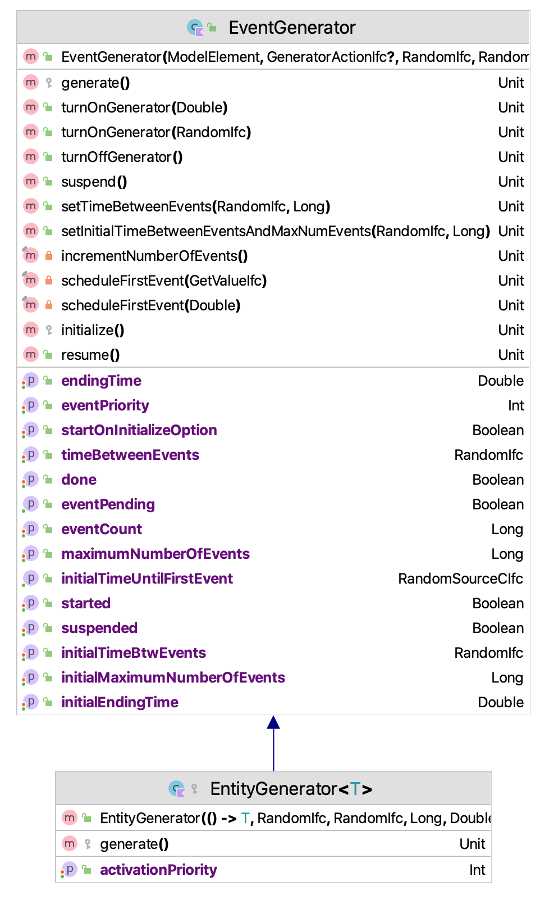
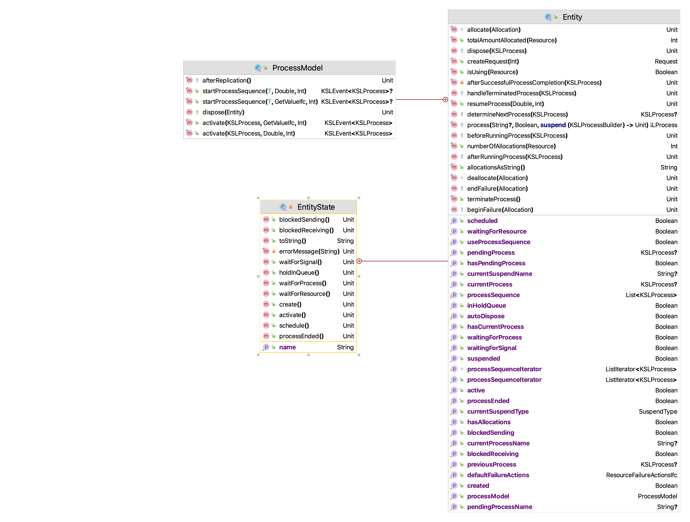
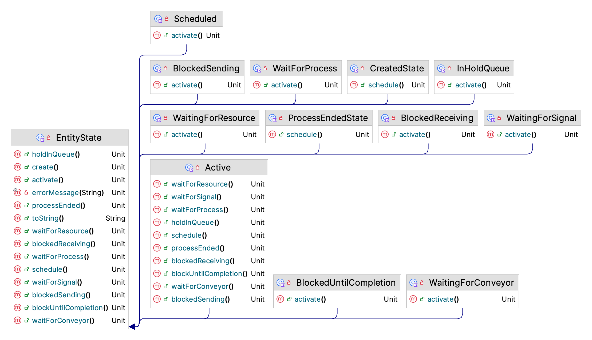
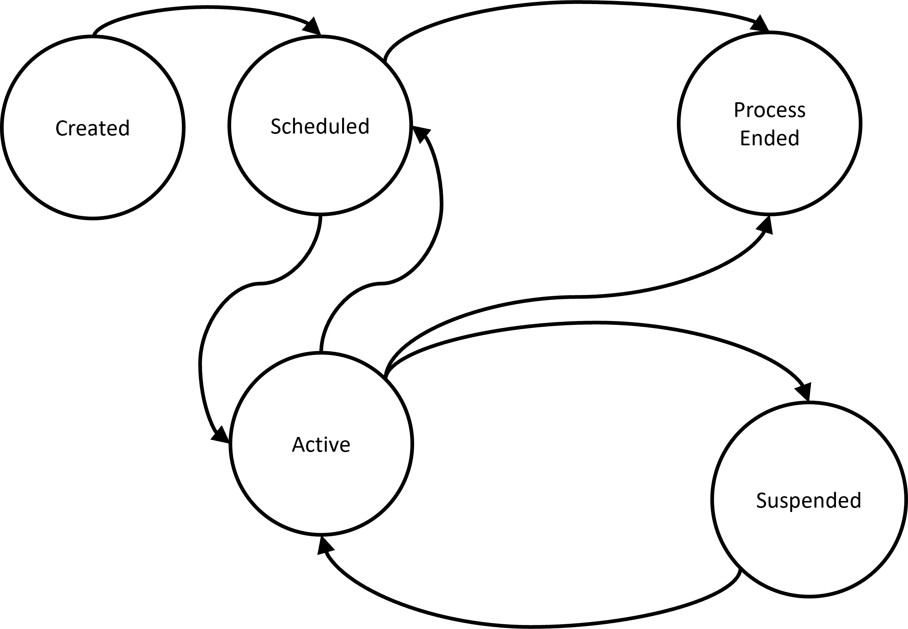
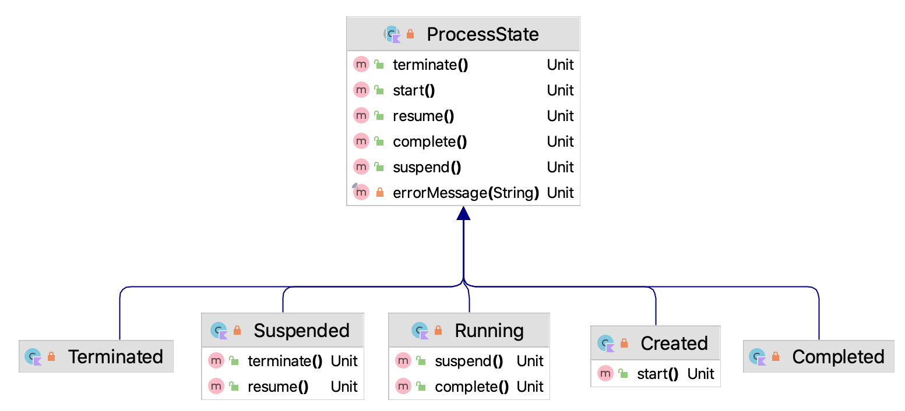
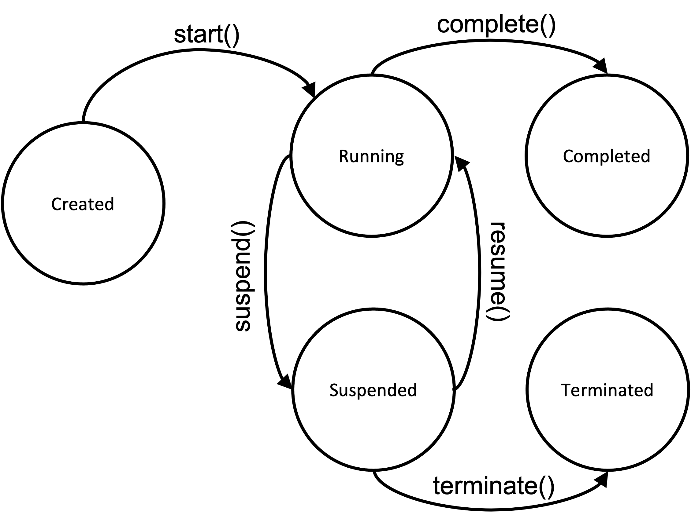
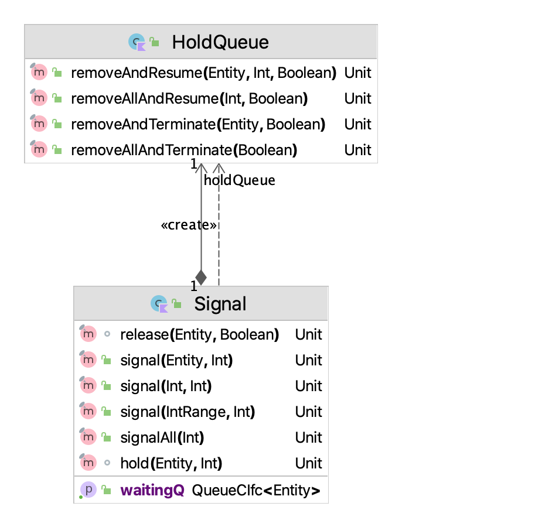
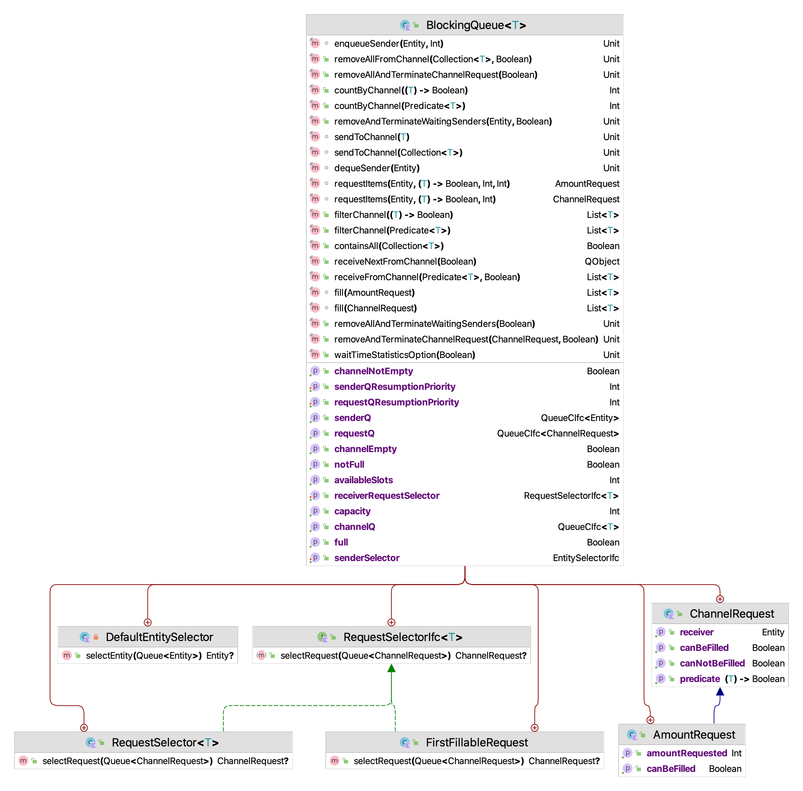
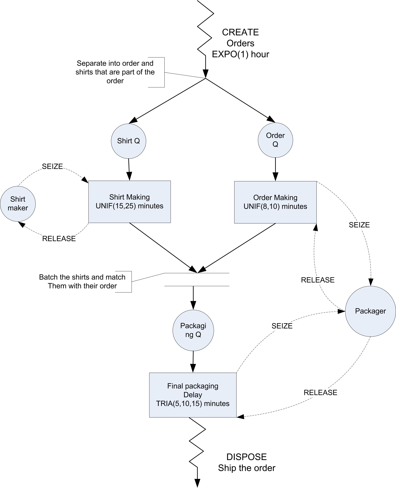

6 Process View Modeling Using the KSL
LEARNING OBJECTIVES
To be able to understand the process view perspective compared to the event view
To be able model discrete-event dynamic systems using the process view
To be able build process view models using the KSL
There are essentially two fundamental viewpoints for modeling a discrete event system within simulation: the event view and the process view. Chapter 4 presented the event view. This chapter will present the process view. These views are simply different representations for the same system. In the event view, the system and its elements are conceptualized as reacting to events. In the process view, the movement of entities through their processes implies the events within the system in the system.
In discrete-event dynamic systems, an event is something that happens at an instant in time which corresponds to a change in system state. An event can be conceptualized as a transmission of information that causes an action resulting in a change in system state. In the event view, we directly modeled the system state by identifying the events and specifying the state changes. In the process view, the events will be implied by the action of entities within the system. An entity is an object of interest that moves through the system. Entities experience processes as they experience the system. In the simplest sense, a process can be thought of as a sequence of activities, where an activity is an element of the system that takes an interval of time to complete. In the pharmacy example, the service of the customer by the pharmacist was an activity. The representation of the dynamic behavior of the system by describing the process flows of the entities moving through the system is called process-oriented modeling. The modeling perspective based on identifying and describing the system’s processes is called the process-view.
This chapter provides a series of example Kotlin code that illustrates the use of KSL constructs for implementing process view simulation models. The full source code of the examples can be found in the accompanying KSLExamples project associated with the KSL repository. The files for each example of this chapter can be found here.
6.1 What are Entities?
When modeling a system, there are often many entity types. For example, consider a retail store. Besides customers, the products might also be considered as entity types. The products (instances of the entity type) are received by the store and wait on the shelves until customers select them for purchase. Entities (entity instances) may come in groups and then are processed individually or they might start out as individual units that are formed into groups. For example, a truck arriving to the store may be an entity that consists of many pallets that contain products. The customers select the products from the shelves and during the check out process the products are placed in bags. The customers then carry their bags to their cars. Entities are uniquely identifiable within the system. If there are two customers in the store, they can be distinguished by the values of their attributes. For example, considering a product as an entity type, it may have attributes serial number, weight, category, and price. The set of attributes for a type of entity is called its attribute set. While all products might have these attributes, they do not necessarily have the same values for each attribute. For example, consider the following two products:
(serial number = 12345, weight = 8 ounces, category = green beans, price = $0.87)
(serial number = 98765, weight = 8 ounces, category = corn, price = $1.12)
The products carry or retain these attributes and their values as they move through the system. In other words, attributes are attached to or associated with entity types. The values of the attributes for particular entity instances might change during the operation of the system. For example, a mark down on the price of green beans might occur after some period of time. Attributes can be thought of as variables that are attached to entity types.
Not all information in a system is local to the entity types. For example, the number of customers in the store, the number of carts, and the number of check out lanes are all characteristics of the system. These types of data are called system attributes. In simulation models, this information can be modeled with global variables or other data modules (e.g. resources) to which all entity instances can have access. By making these quantities visible at the system level, the information can be shared between the entity instances within the model and between the components of the system.
Figure 6.1 illustrates the difference between global (system) variables and entities with their attributes in the context of a warehouse. In the figure, the trucks are entities with attributes: arrival time, type of product, amount of product, and load tracking number. Notice that both of the trucks have these attributes, but each truck has different values for their attributes. The figure also illustrates examples of global variables, such as, number of trucks loading, number of trucks unloading, number of busy forklifts, etc. This type of information belongs to the whole system.

Modeling a system based on entities is the basis of object-oriented programming methods. In object-oriented programming, we identify the classes that describe how the object instances interact. In the process-view, we start with the entities (classes) and create (object) instances of the entities. We can have many different types of classes (entity types) that work together to describe the behavior of the overall system.
Once a basic understanding of the system is accomplished through understanding system variables, the entities (classes), and their attributes, you must start to understand the processes within the system. Developing the process description for the various types of entities within a system and connecting the flow of entities to the changes in state variables of the system is the essence of process-oriented modeling.
6.2 The Process View
Before introducing the many of the technical details of processing modeling within the KSL, we will start with a simple example. The example will again be the drive through pharmacy model but in this section it will be implemented using the process modeling constructs available within the KSL.
Recall that we have a small pharmacy that has a single line for waiting customers and only one pharmacist. Assume that customers arrive at a drive through pharmacy window according to a Poisson distribution with a mean of 10 per hour. The time that it takes the pharmacist to serve the customer is random and data has indicated that the time is well modeled with an exponential distribution with a mean of 3 minutes. Customers who arrive to the pharmacy are served in the order of arrival and enough space is available within the parking area of the adjacent grocery store to accommodate any waiting customers.

The drive through pharmacy system can be conceptualized as a single server waiting line system, where the server is the pharmacist. An idealized representation of this system is shown in Figure 6.2. In Section 4.4.4 of Chapter 4, we presented an activity diagram for the pharmacy.

The activity diagram is a basic description of the process experienced by the customer. In Chapter 4, we used the activity diagram to identify the arrival and end of service events. In this chapter, we will almost directly translate the activity diagram to KSL code.
Here is the portion of the KSL code to model the process for the customers of the drive through pharmacy:
private inner class Customer : Entity() {
val pharmacyProcess: KSLProcess = process {
wip.increment()
timeStamp = time
val a = seize(resource = pharmacists)
delay(delayDuration = serviceTime)
release(allocation = a)
timeInSystem.value = time - timeStamp
wip.decrement()
numCustomers.increment()
}
}The code defines a class called Customer which is a subclass of Entity. The Entity class is a base class that encapsulates the ability to experience processes. Now, notice the definition and initialization of the variable pharmacyProcess within the Customer class. This is a very special function builder that allows for the definition of a coroutine that defines the process for the entity. Coroutines are software constructs that permit the suspension and resumption of programming statements. Kotlin supports the use of coroutines for asynchronous programming. In this situation, the KSL leverages Kotlin’s coroutine library to implement the process view.
Example 6.1 (Process View Model for Drive Through Pharmacy System) This example illustrates how to represent the previously presented drive through pharmacy model of Example 4.4 in Section 4.4.4 using KSL process view constructs.
class DriveThroughPharmacy(
parent: ModelElement,
numPharmacists: Int = 1,
name: String? = null
) : ProcessModel(parent, name) {
init {
require(numPharmacists > 0) { "The number of pharmacists must be >= 1" }
}
private val pharmacists: ResourceWithQ = ResourceWithQ(
parent = this,
name = "Pharmacists",
capacity = numPharmacists
)
private val serviceTime: RandomVariable = RandomVariable(parent = this, rSource = ExponentialRV(0.5, 2))
val serviceRV: RandomVariableCIfc
get() = serviceTime
private val timeBetweenArrivals: RandomVariable = RandomVariable(
parent = parent,
rSource = ExponentialRV(1.0, 1)
)
val arrivalRV: RandomVariableCIfc
get() = timeBetweenArrivals
private val wip: TWResponse = TWResponse(parent = this, name = "${this.name}:NumInSystem")
val numInSystem: TWResponseCIfc
get() = wip
private val timeInSystem: Response = Response(parent = this, name = "${this.name}:TimeInSystem")
val systemTime: ResponseCIfc
get() = timeInSystem
private val numCustomers: Counter = Counter(parent = this, name = "${this.name}:NumServed")
val numCustomersServed: CounterCIfc
get() = numCustomers
private val mySTGT4: IndicatorResponse = IndicatorResponse(
predicate = { x -> x >= 4.0 },
observedResponse = timeInSystem,
name = "SysTime > 4.0 minutes"
)
val probSystemTimeGT4Minutes: ResponseCIfc
get() = mySTGT4
override fun initialize() {
schedule(eventAction = this::arrival, timeToEvent = timeBetweenArrivals)
}
private fun arrival(event: KSLEvent<Nothing>) {
val c = Customer()
activate(c.pharmacyProcess)
schedule(eventAction = this::arrival, timeToEvent = timeBetweenArrivals)
}
private inner class Customer : Entity() {
val pharmacyProcess: KSLProcess = process {
wip.increment()
timeStamp = time
val a = seize(resource = pharmacists)
delay(delayDuration = serviceTime)
release(allocation = a)
timeInSystem.value = time - timeStamp
wip.decrement()
numCustomers.increment()
}
}
}Most of this code should look very familiar. It includes the definition of the random variables to model the time between arrivals and service time. It also defines the responses to collect statistics on the performance of the system. In addition, it uses the functional notation for referencing functional interfaces to schedule the arrival events. Within the arrival event, the customer is created and it is told to activate() its process.
A key item to notice is that the DriveThroughPharmacy class now sub-classes from ProcessModel rather than the ModelElement class. The ProcessModel class is a sub-class of the ModelElement class which provides for the ability to model using the process view. While there is much functionality within the ProcessModel class, for the purposes of process view modeling, the key item of note is a protected inner class called Entity. The Entity class provides the ability to define processes for entities. This is done via the process() function, which is a special function that enables the use of suspending functions within process routines. In the drive through pharmacy code, we see the use of the process function to define the pharmacyProcess property.
The process called pharmacyProcess has a nice linear flow and avoids the event call back approach of the event-view. The first line wip.increment() simply increments the number of customers in the system. The next line involving timeStamp assigns the arrival time of the customer. Then, the customer attempts to seize the pharmacist. If the pharmacist is available, it is allocated to the customer. The variable “a” holds the allocation information. If a pharmacist is not available, the customer is held in a queue related to the invocation of the seize() function. The seize() function is a suspending function. This is the magic of coroutines. The execution of the coroutine literally stops within the seize() function if the pharmacist is not available. When the pharmacist becomes available, the customer (and suspended code) resumes moving through the process. The delay() function is another suspending function. The delay function essentially schedules an event to represent the service time and when the event occurs the coroutine is resumed. The release() deallocates the resource from the customer. The final three lines simply collect statistical quantities.
When using the seize() function to seize a resource, you are actually making a request for the resource. If the request is not immediately filled, then the request waits in a queue. Since we used a ResourceWithQ class to model the resource, the request will wait in the queue associated with the resource. The seize() function returns an instance of the Allocation class. The returned allocation has properties that indicate which queue and which resource was involved with the request. This is why the release() function takes in the allocation. This allows the correct resource to be deallocated and the appropriate queue to be checked when the release occurs.
It is critical to understand that 1) there are many entities created via the arrival method, 2) they all experience the same process description, 3) each entity has its own instance of the process, and 4) they may all be at different points of their process instances at different times. Since many customers are active at the same time (in a pseudo-parallelism) they compete for the pharmacist. This causes queueing. This process view depends on shared state. In this example, the primary shared state is via the resource. This is a new construct and was defined with the following line.
private val pharmacists: ResourceWithQ = ResourceWithQ(
parent = this,
name = "Pharmacists",
capacity = numPharmacists
)A ResourceWithQ is a construct that can be used in ProcessModel instances. These resources track the number of entities that are allocated and can hold them in a common queue while they wait. The ability to describe processes in this manner is what makes the process view very popular and often serves as the basis for commercial software. The KSL provides this view in open-source code.
The main code to run the model is as follows.
fun main(){
val m = Model()
val dtp = DriveThroughPharmacy(m, name = "DriveThrough")
dtp.arrivalRV.initialRandomSource = ExponentialRV(6.0, 1)
dtp.serviceRV.initialRandomSource = ExponentialRV(3.0, 2)
m.numberOfReplications = 30
m.lengthOfReplication = 20000.0
m.lengthOfReplicationWarmUp = 5000.0
m.simulate()
m.print()
}Notice how the specification of the arrival and service random variables have been provided by setting the initial random sources of the underlying random variables. If we run the code, we get the following results.
Half-Width Statistical Summary Report - Confidence Level (95.000)%
Name Count Average Half-Width
------------------------------------------------------------------------------------
NumBusy 30 0.5035 0.0060
# in System 30 1.0060 0.0271
System Time 30 6.0001 0.1441
PharmacyQ:NumInQ 30 0.5025 0.0222
PharmacyQ:TimeInQ 30 2.9961 0.1235
SysTime > 4.0 minutes 30 0.5136 0.0071
Num Served 30 2513.2667 17.6883
----------------------------------------------------------------------------------------- If you look back at the previous results, you will see that these results are exactly the same! Thus, we can model the pharmacy with either the event view or the process view with confidence.
Before discussing additional functionality enabled within the KSLProcessBuilder, we present some functionality that facilitates the creation and activation of entities. Notice that within the pharmacy model that after an customer is created to start its process we must schedule its activation.
private fun arrival(event: KSLEvent<Nothing>) {
val c = Customer()
activate(c.pharmacyProcess)
schedule(eventAction = this::arrival, timeToEvent = timeBetweenArrivals)
}This is so common the KSL provides a class called EntityGenerator that automates this process. The EntityGenerator class subclasses from EventGenerator and allows for a creation pattern to be specified. Figure 6.4 illustrates this relationship.

The EntityGenerator class is defined as an inner class of ProcessModel. Reviewing its code is useful.
protected inner class EntityGenerator<T : Entity>(
private val entityCreator: () -> T,
timeUntilTheFirstEntity: RVariableIfc,
timeBtwEvents: RVariableIfc,
maxNumberOfEvents: Long = Long.MAX_VALUE,
timeOfTheLastEvent: Double = Double.POSITIVE_INFINITY,
var activationPriority: Int = KSLEvent.DEFAULT_PRIORITY + 1,
name: String? = null
) : EventGenerator(
this@ProcessModel, null, timeUntilTheFirstEntity,
timeBtwEvents, maxNumberOfEvents, timeOfTheLastEvent, name
) {
private val myEntityGeneratorAction = GeneratorActionIfc { generate() }
override fun generate() {
val entity = entityCreator()
require(entity.defaultProcess != null) { "There was no default process specified for the entity. Ensure that the `defaultProcess` property is set via the process() function or directly." }
activate(entity.defaultProcess!!, priority = activationPriority)
}
}As shown in the code, the key additional functionality is that the EntityGenerator takes in a function that knows how to create a subclass of type Entity. The simplest way to provide such a function is to provide a reference to the constructor function of the subclass. This is illustrated in the following simplified re-do of the pharmacy model.
Example 6.2 (Demonstrating an Entity Generator) This example illustrates how to construct an instance of the EntityGenerator class and use it to create entity instances according to a time between event pattern.
class EntityGeneratorExample(
parent: ModelElement,
name: String? = null
) : ProcessModel(parent, name) {
private val worker: ResourceWithQ = ResourceWithQ(parent = this, name = "${this.name}:Worker")
private val st = RandomVariable(parent = this, rSource = ExponentialRV(3.0, 2))
private val wip = TWResponse(parent = this, name = "${this.name}:WIP")
private val tip = Response(parent = this, name = "${this.name}:TimeInSystem")
private val tba = ExponentialRV(6.0, 1)
private val generator = EntityGenerator(
entityCreator = ::Customer,
timeUntilTheFirstEntity = tba,
timeBtwEvents = tba
)
private val counter = Counter(parent = this, name = "${this.name}:NumServed")
private inner class Customer : Entity() {
val pharmacyProcess: KSLProcess = process(isDefaultProcess = true) {
wip.increment()
timeStamp = time
val a = seize(worker)
delay(st)
release(a)
tip.value = time - timeStamp
wip.decrement()
counter.increment()
}
}
}Notice the following line which takes in a reference to the Customer class constructor using the functional syntax ::Customer. In addition, notice the specification of the isDefaultProcess argument for the process() function. Setting the isDefaultProcess argument to true indicates that the defined process routine will be the default process to be activated when the EntityGenerator causes the generation event to occur.
private val generator = EntityGenerator(
entityCreator = ::Customer,
timeUntilTheFirstEntity = tba,
timeBtwEvents = tba
)There is no arrival method necessary because that logic is within the entity generator’s generate() method:
override fun generate() {
val entity = entityCreator()
require(entity.defaultProcess != null) {"There was no initial process specified for the entity"}
activate(entity.defaultProcess!!, priority = activationPriority)
}The entity is created using the passed in constructor function and the entity’s default process is started. By default, the process() function of the KSLProcessBuilder class automatically adds each newly defined named process to the entity’s map of named processes. If the name argument is not supplied, then the defined process is not added to the process map. The map of named processes for an entity can be accessed via the processes property of the Entity class.
To specify the default process, provide the isDefaultProcess argument of the process() function to be true. Thus, by using an instance of an EntityGenerator associated with a particular subclass of Entity, we can automatically create the instances of the subclass and activate their processes. Of course, the creation of the subclass (e.g. Customer) might be much more complex; however, the EntityGenerator takes in a function that creates the instance of the subclass. Thus, it can be any function, not just the constructor function. Therefore, instances can be configured in complex ways before they are activated by supplying an appropriate function.
Note that an EntityGenerator relies on the entity having a default process defined via the process() method. An entity generator will create the entity and start the process that is defined as the default process. Rather than use the process() function, you can directly specify the default process via the defaultProcess property of the Entity class. If you try to use an EntityGenerator without a defined default process, then an illegal state exception will occur.
In the next section, we will take a closer look at how the KSL makes the process view possible. This will help you to better use the process modeling capabilities found in the KSL.
6.3 Understanding KSL Processes and Entities
Entities can experience many processes. Thus, there needs to be a mechanism to activate the processes and to cleanup after the processes have completed. The ProcessModel class facilitates the modeling of entities experiencing processes. A ProcessModel has inner classes (Entity, EntityGenerator, etc.) that can be used to describe entities and the processes that they experience.

As noted in Figure 6.5 a ProcessModel can activate KSL processes, can start entity process sequences, can dispose of entities, and will perform some after replication cleanup. One of the activities that a process model must perform is to terminate any processes that are still suspended after the replication is completed. In addition, it ensures that no entity terminates its process while still having allocations to a resource. Thus, a ProcessModel is needed to manage the entities and processes that it manages. This is why in the pharmacy code example, the pharmacy model is a subclass of ProcessModel.
class DriveThroughPharmacy(
parent: ModelElement,
numPharmacists: Int = 1,
name: String? = null
) : ProcessModel(parent, name)This provides the modeler with access to the inner classes e.g. Entity that are inherited by the subclass for use in process modeling.
The key inner class is Entity, which has a function process() that uses a builder to describe the entity’s process in the form of a coroutine. An entity can have many processes described and it may follow specified processes based on different modeling logic. A process model facilitates the running of a sequence of processes that are stored in an entity’s processSequence property. An entity can experience only one process at a time. After completing the process, the entity will try to use its sequence to run the next process (if available). Individual processes can be activated for specific entities. But, again, an entity instance may only be activated to experience one process at a time, even if it has many defined processes. The entity experiences processes sequentially. An error will occur if you try to activate and run a process for a given entity instance if the entity is already executing a process . Note that this does not in anyway limit the creation and activation of different entity instances and their processes.
An Entity instance is something that can experience processes and as such may wait in queues. Entity is a subclass of QObject. Thus, statistics can be collected automatically on entities, if they experience waiting. The general approach to defining a process for an entity is to use the process() function to define a process that a subclass of Entity can follow. Entity instances may use resources, signals, hold queues, etc. as shared mutable state.
Entities may follow a process sequence if defined. An entity can have many properties that define different processes that it might experience. The user can store the processes in data structures. In fact, there is a processSequence property for this purpose that defines a list of processes that the entity will follow. However, the user is responsible for adding processes to the sequence. In addition, if you provide a name for the process when defining it via the process() function, then the processes are stored in the entity instance’s processes map, which can be accessed via the provided name.
The following code defines a process and assigns the function to the property pharmacyProcess. This property is of type KSLProcess. Because the isDefaultProcess argument was supplied to the process() function, the process is defined as the default process to activate by entity generators. Each process can also be provided a string name via an argument of the process() function. The name of a process may also be useful in tracing and debugging process code.
private inner class Customer : Entity() {
val pharmacyProcess: KSLProcess = process(isDefaultProcess = true) {
...
}KSLProcess is an interface that provides a limited view of a KSL process instance. The interface allows the user to check the state of the process, get its identification (id, and name) and access the entity that is associated with the process. Underneath, the instance of a KSLProcess is mapped onto a specially constructed Kotlin coroutine.
interface KSLProcess {
val id: Int
val name: String
val isCreated: Boolean
val isSuspended: Boolean
val isTerminated: Boolean
val isCompleted: Boolean
val isRunning: Boolean
val isActivated: Boolean
val currentStateName: String
val entity: ProcessModel.Entity
/**
* The simulation time that the process first started (activated) after being created.
* If the process was never started, this returns Double.NaN
*/
val processStartTime: Double
/**
* The simulation time that the process completed.
* If the process was never completed, this returns Double.NaN
*/
val processCompletionTime: Double
/**
* The elapsed time from start to completion.
*/
val processElapseTime: Double
get() = processCompletionTime - processStartTime
}The process() function is a special builder function related to a KSLProcessBuilder. A KSLProcessBuilder provides the functionality for describing a process. A process is an instance of a coroutine that can be suspended and resumed. The methods of the KSLProcessBuilder are the suspending functions that are allowed within the process modeling paradigm of the KSL. The various suspending functions have an optional string name parameter to identify the name of the suspension point. While not required for basic modeling, identifying the suspension point can be useful for more advanced modeling involving the cancellation or interrupting of a process. A unique name can be used to determine which suspension point is suspending the process when the process has many suspension points. We will examine the functionality of a KSLProcessBuilder later in this section.
First and foremost, process modeling starts with understanding and using instances of the Entity class.

Figure 6.5 indicates that there is an inner class called EntityState within an Entity. As seen in Figure 6.6, EntityState serves as the base class for defining the legal states for an entity and the legal state transitions using the state pattern as show in Figure 6.7.
CreatedState- The entity is placed into this state when it is created. From the created state, the entity can be scheduled to be active.Scheduled- The scheduled state indicates that the entity is associated with an event that is pending to occur in the event calendar. The entity is scheduled to be active at some future time. The underlying process associated with the entity is suspended.Active- This is the state that indicates that the entity is executing an underlying process. It is executing non-suspending code within its process. It is the active entity. From the active state, the entity can be suspended for a number of reasons, each mapped to various states.WaitingForResource- This state indicates that the entity’s process is suspended because the entity is waiting for units of a resource.WaitingForSignal- This state indicates that the entity’s process is suspended because the entity is waiting on an arbitrary signal to be sent.BlockedSending- This state indicates that the entity’s process is suspended because the entity is trying to send an item via a shared blocking queue and there is not space for the item in the queue. Blocking queues can be used to communicate between processes.BlockedReceiving- This state indicates that the entity’s process is suspended because the entity is trying to receive items from a blocking queue and there are no items to receive. This is the other end of the communication channel formed by a blocking queue.InHoldQueue- This state indicates that the entity’s process is suspended because the entity is an arbitrary queue that holds entities until they are removed and re-activated.WaitForProcess- An entity may activate another process. This state indicates that the entity’s process is suspended because the entity is waiting for the process to complete before proceeding.BlockedUntilCompletion- An entity may activate another process that has blockages. This state indicates that the entity’s process is suspended because the entity is waiting for the blockage to complete.

The entity states are mapped onto the lower level coroutine via an internal inner class (ProcessCoroutine). This class defines the legal states of the coroutine shown in Figure 6.8.

Again, these states define the legal states of the underlying process coroutine. In general, users will not care about these internal details, but a basic understanding of what are legal transitions, shown in Figure 6.9 can be helpful. The following are the process coroutine states:
- Created - The process coroutine is placed in this state when it is instantiated.
- Running - The coroutine is running after it is started. This occurs when the entity activates the associated process. Processes are started by scheduling an event that invokes the coroutine code at the appropriate simulated time. The entity moves through its process and when the entity is between suspension points the process is considered to be in the running state.
- Suspended - The underlying process coroutine is suspended using Kotlin’s coroutine suspension functionality. Suspension is mapped to the various suspension states associated with an entity.
- Completed - The process coroutine has exited normally from the process routine or reached the end of the process routine. Once completed the coroutine is finished.
- Terminated - The process coroutine has exited abnormally via an error or exception or the user has directly terminated the process. Once terminated the coroutine is finished.
When a process coroutine exits normally the process coroutine is placed in the completed state. Then, the ProcessModel checks if the entity has a next process to start. This check occurs via the determineNextProcess() function of the entity. If the entity has been specified to use its process sequence via its useProcessSequence property, then the process sequence will be used to determine the next process to activate. If the entity is not using its process sequence, then the entity will not automatically start the next process. The user can also override the determineNextProcess() function and directly determine the next process to start. The default behavior is to not follow a process sequence such that no new process will be started (automatically).
If the entity is executing a process and the process is suspended, then the process routine may be terminated. This causes the currently suspended process to exit, essentially with an error condition. No further programming statements within the process coroutine will execute. The process ends (placed in the terminated state). All resources that the entity has allocated will be deallocated. If the entity was waiting in a queue, the entity is removed from the queue and no statistics are collected on its queueing. If the entity is experiencing a delay, then the event associated with the delay is cancelled. If the entity has additional processes in its process sequence they are not automatically executed. If the user requires specific behavior to occur for the entity after termination, then the user should override the Entity’s handleTerminatedProcess() function to supply specific logic. Termination happens immediately, with no time delay.

The following section will illustrate through some simple models some of the functionality enabled by KSLProcessBuilder.
6.4 Examples of Process Modeling
The following example illustrates how to use a hold queue via the HoldQueue class. A hold queue holds an entity within a queue until it is removed. It is important to note that the entity that goes into the hold queue cannot remove itself. Thus, as you will see in the following code, we schedule an event that causes the entities to be removed at a specific time. The hold queue is created and an event action defined to represent the event. The entity process is simple, when the entity enters the process it immediately enters the hold queue. The process will be suspended. After being removed and resumed, the entity continues through a couple of delays.
6.4.1 Holding Entities in a Queue: HoldQueue Class
Example 6.3 (Illustrating a HoldQueue) This example illustrates how to create an instance of the HoldQueue class and how to use it to hold entities until they can be released. An event is scheduled to cause held entities to be removed and to resume their processing.
class HoldQExample(parent: ModelElement) : ProcessModel(parent, null) {
private val myHoldQueue: HoldQueue = HoldQueue(this, "hold")
private val myEventActionOne: EventActionOne = EventActionOne()
private inner class Customer: Entity() {
val holdProcess : KSLProcess = process() {
println("time = $time : before being held customer = ${this@Customer.name}")
hold(myHoldQueue)
println("time = $time : after being held customer = ${this@Customer.name}")
delay(10.0)
println("time = $time after the first delay for customer = ${this@Customer.name}")
delay(20.0)
println("time = $time after the second delay for customer = ${this@Customer.name}")
}
}
override fun initialize() {
val e = Customer()
activate(e.holdProcess)
val c = Customer()
activate(c.holdProcess, 1.0)
schedule(myEventActionOne, 5.0)
}
private inner class EventActionOne : EventAction<Nothing>() {
override fun action(event: KSLEvent<Nothing>) {
println("Removing and resuming held entities at time : $time")
myHoldQueue.removeAllAndResume()
}
}
}The initialize() method creates a couple of entities and activates their hold process. In addition, the event representing the release from the hold queue is scheduled for time 5.0. In the event logic, we see that the hold queue instance is used to call its removeAllAndResume() function. The HoldQueue class is a subclass of the Queue class. Thus, statistics are collected when it is used. In addition, it can be iterated and searched. If a reference to a particular entity is available, then the removeAndResume() function can be used to remove and resume a specific entity. These two methods automatically resume the entity’s process. Other methods inherited from the Queue class allows for the entities to be removed without resuming their processes. It is then the responsibility of the user to properly resume the suspended processes by directly using the entity instance. There are also methods for terminating the held entity’s processes. The output from this simple simulation is as follows:
time = 0.0 : before being held customer = ID_1
time = 1.0 : before being held customer = ID_2
Removing and resuming held entities at time : 5.0
time = 5.0 : after being held customer = ID_1
time = 5.0 : after being held customer = ID_2
time = 15.0 after the first delay for customer = ID_1
time = 15.0 after the first delay for customer = ID_2
time = 35.0 after the second delay for customer = ID_1
time = 35.0 after the second delay for customer = ID_2We see that the two customers are held in the queue right after activation. Then, the event at time 5.0 occurs which removes and resumes the held entities. The rest of the output indicates the the entities continue their processes.
6.4.2 Signaling Entities
The next example illustrates the use of the Signal class, which builds off of the HoldQueue class, as shown in Figure 6.10.

The Signal class uses an instance of the HoldQueue class to hold entities until they are notified to move via the index of their rank in the queue. If you want the first entity to be signaled, then you call signal(0). The entity is notified that its suspension is over and it removes itself from the hold queue. Thus, contrary to the HoldQueue class the user does not have to remove and resume the corresponding entity.
Here is some example code. Notice that the code subclasses from the ProcessModel class. All implementations that use the process modeling constructs must subclass from the ProcessModel class. Then, the instance of the Signal class is created. An inner class implements the process description and represents the entity’s process that uses the signal. In the process, the entity immediately waits for the signal. After the signal, the entity has a simple delay and then the process ends.
Example 6.4 (Illustrating how to Hold and Signal Entities) This example illustrates how to use the Signal class to hold entities until a signal is sent. Once the signal is received the entity continues its processing.
fun main(){
val m = Model()
SignalExample(m)
m.numberOfReplications = 1
m.lengthOfReplication = 50.0
m.simulate()
m.print()
}
class SignalExample(parent: ModelElement, name: String? = null) : ProcessModel(parent, name) {
private val signal = Signal(this, "SignalExample")
private inner class SignaledEntity : Entity() {
val waitForSignalProcess: KSLProcess = process {
println("$time > before waiting for the signal: ${this@SignaledEntity.name}")
waitFor(signal)
println("$time > after getting the signal: ${this@SignaledEntity.name}")
delay(5.0)
println("$time > after the second delay for entity: ${this@SignaledEntity.name}")
println("$time > exiting the process of entity: ${this@SignaledEntity.name}")
}
}
override fun initialize() {
for (i in 1..10){
activate(SignaledEntity().waitForSignalProcess)
}
schedule(this::signalEvent, 3.0)
}
private fun signalEvent(event: KSLEvent<Nothing>){
signal.signal(0..4)
}
}The initialize() method creates 10 instances of the SignalEntity subclass of the Entity class and activates each entity’s waitForSignalProcess process. It also schedules an event to cause the signal to occur at time 3.0. In the signal event, the reference to the Signal class instance, signal, is used to call the signal() method of of the Signal class. The first 5 waiting entities are signaled using a Kotlin range. The output from the process is as follows.
0.0 > before waiting for the signal: ID_1
0.0 > before waiting for the signal: ID_2
0.0 > before waiting for the signal: ID_3
0.0 > before waiting for the signal: ID_4
0.0 > before waiting for the signal: ID_5
0.0 > before waiting for the signal: ID_6
0.0 > before waiting for the signal: ID_7
0.0 > before waiting for the signal: ID_8
0.0 > before waiting for the signal: ID_9
0.0 > before waiting for the signal: ID_10
3.0 > signaling the entities in range 0..4
3.0 > after getting the signal: ID_1
3.0 > after getting the signal: ID_2
3.0 > after getting the signal: ID_3
3.0 > after getting the signal: ID_4
3.0 > after getting the signal: ID_5
8.0 > after the second delay for entity: ID_1
8.0 > exiting the process of entity: ID_1
8.0 > after the second delay for entity: ID_2
8.0 > exiting the process of entity: ID_2
8.0 > after the second delay for entity: ID_3
8.0 > exiting the process of entity: ID_3
8.0 > after the second delay for entity: ID_4
8.0 > exiting the process of entity: ID_4
8.0 > after the second delay for entity: ID_5
8.0 > exiting the process of entity: ID_5We see that at time 0.0, the 10 entities are created and their process activated so that they wait for the signal. Then, at time 3.0, the signal occurs and each of the signaled entities (in turn) resume their processes. Eventually, they complete their process after the 5.0 time unit delay. Notice that since the simulation run length was 50.0 time units, the simulation continues until that time. However, since there are no more signals, the last 5 entities remain waiting (suspended) at the end of the simulation. As previously mentioned, the ProcessModel class is responsible for removing these entities that are suspended after the replication has completed. Thus, when the next replication starts, there will not be 5 entities still waiting. The KSL takes care of these common clean up actions automatically.
6.4.3 Understanding Blocking Queues
This next example illustrates the use of a blocking queue. Blocking queues are often used in asynchronous programs to communicated between different threads. In the case of KSL process models, we can use the concept of blocking queues to assist with communication between two processes.
Blocking queues can block on sending or on receiving. The typical use is to block when trying to dequeue an item from the queue when the queue is empty or if you try to enqueue an item and the queue is full. A process trying to dequeue from an empty queue is blocked until some other process inserts an item into the queue. A process trying to enqueue an item in a full queue is blocked until some other process makes space in the queue, either by dequeuing one or more items or clearing the queue completely. The KSL provides a class called BlockingQueue that facilitates this kind of modeling. In the case of the KSL, depending on the configuration of the queue, both the sender and the receiver may block.

There are actually three queues used in the implementation of the BlockingQueue class. One queue called the senderQ will hold entities that place items into the blocking queue if the queue is full. Another queue, called the receiverQ, will hold entities that are waiting for items to be placed in the queue to be removed. Lastly, is the blocking queue, itself, which is better conceptualized as a channel between the sender and the receiver. This queue is called the channelQ and holds items that are placed into it for eventual removal. Statistics can be collected (or not) on any of these queues. The sender and receiver queues are essentially instances of the KSL Queue class. As such, they have no capacity limitation. The channel queue can have a capacity. If a capacity is not provided, it is Int.MAX_VALUE, which is essentially infinite.
As noted in Figure 6.11 we see that the items within the queue are requested from the receiver. These requests can have a specific amount. The receiver will need to wait until the specific amount of their request becomes available in the queue (channel). Users can provide a selection rule for the requests to determine which requests will be selected for filling when new items arrive within the channel. The default request selection rule is to select the next request. The following code illustrates the basic creation and use of a blocking queue.
Example 6.5 (Illustrating a Blocking Queue) This example illustrates how to use a blocking queue. A blocking queue can cause an entity to wait until an item is available in the channel or cause an entity to wait until there is space in the channel.
class BlockingQExample(
parent: ModelElement,
name: String? = null
) : ProcessModel(parent, name) {
// val blockingQ: BlockingQueue<QObject> = BlockingQueue(this)
val blockingQ: BlockingQueue<QObject> = BlockingQueue(this, capacity = 10)
init {
// blockingQ.waitTimeStatisticsOption(false)
}You can create a blocking queue with a capacity (or not) and you can specify whether the statistics are collected (or not) as noted by the commented code of the example. In this example, the queue (channel) has a capacity of 10 items.
In the following code, we implement the process for receiving items from the blocking queue. Notice that there is a loop within the process. This illustrates that all normal Kotlin control structures are available within process routines. The entity (receiver) will loop through this process 15 time and essentially wait for single item to be placed in the blocking queue. If the entity hits the waitForItems() suspending function call and there is an item in the queue, then it immediately receives the item and continues with its process. If an item is not available in the blocking queue when the entity reaches the waitForItems() suspending function, then the requesting entity will wait until an item becomes available and will not proceed until it receives the requested amount of items. After receiving its requested items, the entity continues with its process.
private inner class Receiver: Entity() {
val receiving : KSLProcess = process("receiving") {
for (i in 1..15) {
println("$time > before the first delay for entity: ${this@Receiver.name}")
delay(1.0)
println("$time > trying to get item for entity: ${this@Receiver.name}")
waitForItems(blockingQ, 1)
println("$time > after getting item for entity: ${this@Receiver.name}")
delay(5.0)
println("$time > after the second delay in ${this@Receiver.name}")
}
println("$time > exiting the process in ${this@Receiver.name}")
}
}In this code snippet, the entity (sender), also loops 15 times. Each time within the loop, the entity creates an instance of a QObject and places it in the blocking queue via the send() method. Since the blocking queue has capacity 10, and the time between requests by the receive is a little longer than the time between sends, the blocking queue will reach its capacity. If it does reach its capacity, then the sender will have to wait (blocking) at the send() suspending function until space becomes available in the channel.
private inner class Sender: Entity() {
val sending : KSLProcess = process("sending") {
for (i in 1..15){
delay(5.0)
println("$time > after the first delay for sender ${this@Sender.name}")
val item = QObject()
println("$time > before sending an item from sender ${this@Sender.name}")
send(item, blockingQ)
println("$time > after sending an item from sender ${this@Sender.name}")
}
println("$time > exiting the process for sender ${this@Sender.name}")
}
}
override fun initialize() {
val r = Receiver()
activate(r.receiving)
val s = Sender()
activate(s.sending)
}
}In the intialize() method, single instances of the receiver and sender are created and their processes activated. The model is setup to run for 100 time units
fun main(){
val m = Model()
val test = BlockingQExample(m)
m.lengthOfReplication = 100.0
m.numberOfReplications = 1
m.simulate()
m.print()
}The output of the simulation is illustrative of the coordination that occurs between the receiver and the sender. We see in this output that the the receiving entity blocks at time 1.0. Finally, at time 5.0 the sender sends an item and it is received by the receiving entity. Both processes continue.
0.0 > before the first delay for receiving entity: ID_1
1.0 > trying to get item for receiving entity: ID_1
5.0 > after the first delay for sender ID_2
5.0 > before sending an item from sender ID_2
5.0 > after sending an item from sender ID_2
5.0 > after getting item for receiving entity: ID_1
10.0 > after the first delay for sender ID_2
10.0 > before sending an item from sender ID_2
10.0 > after sending an item from sender ID_2
10.0 > after the second delay for receiving entity: ID_1
10.0 > before the first delay for receiving entity: ID_1
.
.
.The queueing statistics indicate that the sender never blocked and the receiver had a small amount of blocking.
Half-Width Statistical Summary Report - Confidence Level (95.000)%
Name Count Average Half-Width
-----------------------------------------------------------------------------------------
BlockingQueue_4:SenderQ:NumInQ 1 0.0000 NaN
BlockingQueue_4:SenderQ:TimeInQ 1 0.0000 NaN
BlockingQueue_4:RequestQ:NumInQ 1 0.2100 NaN
BlockingQueue_4:RequestQ:TimeInQ 1 0.3077 NaN
BlockingQueue_4:ChannelQ:NumInQ 1 0.3300 NaN
BlockingQueue_4:ChannelQ:TimeInQ 1 2.2000 NaN
-----------------------------------------------------------------------------------------As illustrated in this example, a blocking queue can facilitate the passing of information between two processes. These types of constructs can serve as the basis for communicating between agents which can invoke different procedures for different messages and wait until receiving and or sending messages. We will see another example of using a blocking queue later in this chapter.
6.4.4 Allowing Entities to Wait for a Process
In the previous three examples, we saw how we can use a hold queue, a signal, and a blocking queue within a process description. In the case of the blocking queue, we saw how two processes communicated. In this next simple example, we also see how two processes can coordinate their flow via the use of the waitFor(process: KSLProcess) suspending function. The purpose of the waitFor(process: KSLProcess) suspending function is to allow one entity to start another process and have the entity that starts the process wait until the newly activated process is completed. The following code indicates the signature of the waitFor(process: KSLProcess) suspending function.
/** Causes the current process to suspend until the specified process has run to completion.
* This is like run blocking. It activates the specified process and then waits for it
* to complete before proceeding.
*
* @param process the process to start for an entity
* @param timeUntilActivation the time until the start the process
* @param priority the priority associated with the event to start the process
*/
suspend fun waitFor(
process: KSLProcess,
timeUntilActivation: Double = 0.0,
priority: Int = KSLEvent.DEFAULT_PRIORITY,
suspensionName: String? = null
)The waitFor(process: KSLProcess) suspending function activates the named process and suspends the current process until the activated process completes. Then, the suspending process is resumed. Let’s take a look at a simple example. Most of this class is simply to define the two interacting processes.
Example 6.6 (Illustrating Waiting for a Process) This example illustrates how you can use one process to start another process. In addition, the process that starts the secondary process will wait until the secondary process completes before continuing.
class WaitForProcessExample(parent: ModelElement) : ProcessModel(parent, null) {
private val worker: ResourceWithQ = ResourceWithQ(this, "worker", 1)
private val tba = RandomVariable(this, ExponentialRV(6.0, 1), "Arrival RV")
private val st = RandomVariable(this, ExponentialRV(3.0, 2), "Service RV")
private val wip = TWResponse(this, "${name}:WIP")
private val tip = Response(this, "${name}:TimeInSystem")
private val arrivals = Arrivals()
private val total = 1
private var n = 1
private inner class Customer : Entity() {
val simpleProcess: KSLProcess = process {
println("\t $time > starting simple process for entity: ${this@Customer.name}")
wip.increment()
timeStamp = time
use(worker, delayDuration = st)
tip.value = time - timeStamp
wip.decrement()
println("\t $time > completed simple process for entity: ${this@Customer.name}")
}
val wfp = process {
val c = Customer()
println("$time > before waitFor simple process for entity: ${this@Customer.name}")
waitFor(c.simpleProcess)
println("$time > after waitFor simple process for entity: ${this@Customer.name}")
}
}
override fun initialize() {
arrivals.schedule(tba)
}
private inner class Arrivals : EventAction<Nothing>() {
override fun action(event: KSLEvent<Nothing>) {
if (n <= total) {
val c = Customer()
println("$time > activating the waitFor process for entity: ${c.name}")
activate(c.wfp)
schedule(tba)
n++
}
}
}
}The Customer class is very similar to previous examples of a simple queueing situation. However, notice the use of the use() function. Because the combination of seize-delay-release is so common, the KSL provides the use() function to combine these into a convenient suspending function. It is illustrative to see the implementation:
suspend fun use(
resource: ResourceWithQ,
amountNeeded: Int = 1,
seizePriority: Int = PRIORITY,
delayDuration: GetValueIfc,
delayPriority: Int = PRIORITY,
) {
val a = seize(resource, amountNeeded, seizePriority)
delay(delayDuration, delayPriority)
release(a)
}Getting back to Example 6.6, the code defines a process called WaitForAnotherProcess. The sole purpose of this process is to create an instance of the customer, activate its simple process, and wait for it to complete. The output from activating one instance of the wait for another process is as follows:
0.8149947795247992 > activating the waitFor process for entity: ID_1
0.8149947795247992 > before waitFor simple process for entity: ID_1
0.8149947795247992 > starting simple process for entity: ID_2
5.091121672376351 > completed simple process for entity: ID_2
5.091121672376351 > after waitFor simple process for entity: ID_1We see that the activation of entity ID_1 occurs at time 0.81, when it then subsequently activates entity ID_2’s simple process. Entity ID_1 then suspends while entity ID_2 executes its simple process, which completes at time 5.09. Then, entity ID_1’s process is allowed to complete. Thus, we see that it is easy to activate separate processes and to coordinate their completion.
6.4.5 Process Interaction
In this section, we will explore how processes associated with two (or more) different entities can interact during their execution by directly suspending and resuming each other. The previous process constructs are built upon the general lower level functionality of suspending the process and then resuming the process. For example, for the wait and signal construct, the entity will wait on a particular signal. During the wait, the entity’s process is suspended. The signal causes the waiting entities to resume their process from the wait for signal suspension point. The KSL implements the previously described suspension functions by using the low-level suspend() function. Once an entity’s process is suspended, it needs to be resumed. The entity’s resumeProcess() function provides this capability. The following example illustrates how to facilitate the direct suspension and resumption of processes.
Example 6.7 (Direct Process Interaction) Consider modeling the interaction between a soccer mom and her daughter. The soccer mom has a daughter who plays forward on a soccer team. The game day proceeds as follows. First, the mom drives the daughter to the game. The drive takes 30 minutes. After arriving to the field, the daughter exits the mini-van, which takes 2 minutes. After the daughter exits the van, the mom departs to run some errands, meanwhile the daughter plays soccer. The mom’s errands take approximately 45 minutes. The soccer game takes approximately 60 minutes. If the mom returns from the errands before the game ends, the mom waits patiently to pick up her daughter to go home. If the game ends, before the mom returns, the daughter waits patiently for the mom to return. Once the mother and daughter are together, the daughter loads up her soccer gear and enters the van. This loading time takes 2 minutes. After all is loaded, the happy mom and daughter drive home, which takes 30 minutes.
We can build a process model for this situation and use instances of the Suspension class within the implementation. The key to implementing this situation is to capture the suspensions and to share the references of the entities. Let’s start with the mom’s process. The following code shows the mom’s process with extensive print statements added to illustrate the interaction.
private inner class Mother : Entity() {
val daughterExiting: Suspension = Suspension(name = "Suspend for daughter to exit van")
val daughterPlaying: Suspension = Suspension(name = "Suspend for daughter playing")
val daughterLoading: Suspension = Suspension(name = "Suspend for daughter entering van")
val momProcess = process {
println("$time> starting mom = ${this@Mother.name}")
println("$time> mom = ${this@Mother.name} driving to game")
delay(30.0)
println("$time> mom = ${this@Mother.name} arrived at game")
val daughter = Daughter(this@Mother)
activate(daughter.daughterProcess)
println("$time> mom = ${this@Mother.name} suspending for daughter to exit van")
//suspend mom's process
suspendFor(daughterExiting)
println("$time> mom = ${this@Mother.name} running errands...")
delay(45.0)
println("$time> mom = ${this@Mother.name} completed errands")
if (daughter.motherShopping.isSuspended){
println("$time> mom, ${this@Mother.name}, mom resuming daughter done playing after errands")
resume(daughter.motherShopping)
} else {
println("$time> mom, ${this@Mother.name}, mom suspending because daughter is still playing")
suspendFor(daughterPlaying)
}
suspendFor(daughterLoading)
println("$time> mom = ${this@Mother.name} driving home")
delay(30.0)
println("$time> mom = ${this@Mother.name} arrived home")
}
}In this modeling, it is important to realize the reason for suspensions. The soccer mom will need three suspensions: 1) suspending while the daughter exits the vehicle, 2) suspending if the daughter is still playing, or 3) suspending while the daughter is entering the van. The three instances of the Suspension class represent these three possibilities and also provide shared state information.
The next concept to grasp is that the mom’s process activates the daughter’s process. The mom’s process creates an instance of the daughter and then activates the daughter’s process. The mom’s process captures a reference to the Daughter in the daughter variable. The activation of a process schedules an event to occur. In this case, the event is scheduled for the current time. Note that the daughter’s process starts after the mom completes the delay for driving to the field.
Then, the mom suspends using the suspendFor() function, specifying the appropriate Suspension instance. The suspendFor() function takes in the suspension that labels the suspension point. Now, let’s look at the daughter’s process.
When the mom process activates the daughter, the daughter starts the delay to exit the van. After exiting the van, the daughter tells the mom process via the resume(mother.daughterExiting) function to resume. Recall, that the mom process immediately suspended while the daughter exited the van. The critical item to note is that a reference to the Mom entity is required to create the daughter instance and the suspensions are public properties of the mother class. Thus, the daughter has a reference to the mom instance within the daughter’s process routine.
In the following code, the daughter has her own suspension possibility via the motherShopping Suspension.
private inner class Daughter(val mother: Mother) : Entity() {
val motherShopping: Suspension = Suspension("Suspend for mother shopping")
val daughterProcess = process {
println("$time> starting daughter ${this@Daughter.name}")
println("$time> daughter, ${this@Daughter.name}, exiting the van")
delay(2.0)
println("$time> daughter, ${this@Daughter.name}, exited the van")
// resume mom process
println("$time> daughter, ${this@Daughter.name}, resuming mom")
resume(mother.daughterExiting)
println("$time> daughter, ${this@Daughter.name}, starting playing")
// delay(30.0)
delay(60.0)
println("$time> daughter, ${this@Daughter.name}, finished playing")
// suspend if mom isn't here
if (mother.daughterPlaying.isSuspended){
// mom's errand was completed and mom suspended because daughter was playing
resume(mother.daughterPlaying)
} else {
println("$time> daughter, ${this@Daughter.name}, mom errands not completed suspending")
suspendFor(motherShopping)
}
println("$time> daughter, ${this@Daughter.name}, entering van")
delay(2.0)
println("$time> daughter, ${this@Daughter.name}, entered van")
// resume mom process
println("$time> daughter, ${this@Daughter.name}, entered van, resuming mom")
resume(mother.daughterLoading)
}
}After playing the daughter uses the daughterPlaying Suspension of the mother to determine if the mother is suspended because her errands were completed before the daughter completed playing soccer. If the mother is not suspended for the daughter’s playing, then the daughter suspends while the mother completes shopping.
Now, let’s look at the rest of the mom’s process. We see that after suspending to let the daughter exit the van, the mom will run her errands. Since the mom could return early, she checks if the daughter is suspended waiting for her to complete shopping, and if so, the mother resumes the daughter (so that the daughter can start loading). If the daughter is not suspended for the mom’s shopping, she is still playing. So, the mom will suspend until the daughter completes playing.
val momProcess = process {
println("$time> starting mom = ${this@Mother.name}")
println("$time> mom = ${this@Mother.name} driving to game")
delay(30.0)
println("$time> mom = ${this@Mother.name} arrived at game")
val daughter = Daughter(this@Mother)
activate(daughter.daughterProcess)
println("$time> mom = ${this@Mother.name} suspending for daughter to exit van")
//suspend mom's process
suspendFor(daughterExiting)
println("$time> mom = ${this@Mother.name} running errands...")
delay(45.0)
println("$time> mom = ${this@Mother.name} completed errands")
if (daughter.motherShopping.isSuspended){
println("$time> mom, ${this@Mother.name}, mom resuming daughter done playing after errands")
resume(daughter.motherShopping)
} else {
println("$time> mom, ${this@Mother.name}, mom suspending because daughter is still playing")
suspendFor(daughterPlaying)
}
suspendFor(daughterLoading)
println("$time> mom = ${this@Mother.name} driving home")
delay(30.0)
println("$time> mom = ${this@Mother.name} arrived home")
}The mother will always suspend for the daughter loading. After being resumed by the daughter to indicate that the loading is complete, the mom delays for the drive home. The following output illustrates what happens for the case of the mother’s errand time being less than the playing time of the daughter.
0.0> starting mom = ID_1
0.0> mom = ID_1 driving to game
30.0> mom = ID_1 arrived at game
30.0> mom = ID_1 suspending for daughter to exit van
30.0> starting daughter ID_2
30.0> daughter, ID_2, exiting the van
32.0> daughter, ID_2, exited the van
32.0> daughter, ID_2, resuming mom
32.0> daughter, ID_2, starting playing
32.0> mom = ID_1 running errands...
77.0> mom = ID_1 completed errands
77.0> mom, ID_1, mom suspending because daughter is still playing
92.0> daughter, ID_2, finished playing
92.0> daughter, ID_2, entering van
94.0> daughter, ID_2, entered van
94.0> daughter, ID_2, entered van, resuming mom
94.0> mom = ID_1 driving home
124.0> mom = ID_1 arrived homeWe see in this output that the mom suspends at time 30, while the daughter exits the van. The daughter starts playing and the mom starts her errands at time 32. The mom completes her errands at time 77 and suspends until the daughter is done playing at time 92. At which time, the daughter enters the van at time 94. They both drive off “together” starting at time 94.
We encourage the interested reader to re-run the code after changing the playing time to a smaller value, for example, 30 minutes. Then, you will see that the daughter suspends until the mother completes her errands. Thus, by carefully suspending and resuming processes, we can coordinate their interaction as they proceed through time. This is the essence of the process interaction approach to simulation model representation. However, this low level coordination requires special attention to shared state and a deep understanding of how the processes interact, which can be error prone.
This same interaction can be achieved using other KSL constructs. Specifically, the HoldQueue and Signal constructs can also be used. Notice that when using the Suspension class, there were no waiting statistics collected when the processes wait for each other to complete. If you need waiting statistics, then using the HoldQueue or the Signal class can be useful.
The following code illustrates the use of the HoldQueue class. Notice that there are four hold queues defined. These represent the suspension points from the previous example. Just as before, the mother activates the daughter and then suspends via the hold() function. The mother uses the shared instances of the hold queues to check if the daughter is waiting in the waitForMomToShopQ hold queue. If so, the mother removes the daughter from the queue and then resumes the daughter’s process. the mother will suspend (if necessary) for the daughter to complete playing via the hold(waitForDaughterToPlayQ) call. In addition, the mother will hold for the daughter to enter the van.
class SoccerMomViaHoldQ(
parent: ModelElement,
name: String? = null
) : ProcessModel(parent, name) {
private val waitForDaughterToExitQ = HoldQueue(this, name = "WaitForDaughterToExitQ")
private val waitForDaughterToPlayQ = HoldQueue(this, name = "WaitForDaughterToPlayQ")
private val waitForDaughterToLoadQ = HoldQueue(this, name = "WaitForDaughterToLoadQ")
private val waitForMomToShopQ = HoldQueue(this, name = "WaitForMomToShopQ")
override fun initialize() {
val m = Mother()
activate(m.momProcess)
}
private inner class Mother : Entity() {
val momProcess = process {
println("$time> starting mom = ${this@Mother.name}")
println("$time> mom = ${this@Mother.name} driving to game")
delay(30.0)
println("$time> mom = ${this@Mother.name} arrived at game")
val daughter = Daughter(this@Mother)
activate(daughter.daughterProcess)
println("$time> mom = ${this@Mother.name} suspending for daughter to exit van")
//suspend mom's process
hold(waitForDaughterToExitQ)
println("$time> mom = ${this@Mother.name} running errands...")
delay(45.0)
println("$time> mom = ${this@Mother.name} completed errands")
if (waitForMomToShopQ.contains(daughter)){
println("$time> mom, ${this@Mother.name}, mom resuming daughter done playing after errands")
waitForMomToShopQ.removeAndResume(daughter)
} else {
println("$time> mom, ${this@Mother.name}, mom suspending because daughter is still playing")
hold(waitForDaughterToPlayQ)
}
hold(waitForDaughterToLoadQ)
println("$time> mom = ${this@Mother.name} driving home")
delay(30.0)
println("$time> mom = ${this@Mother.name} arrived home")
}
}The daughter’s process is very similar to the previous example code. Notice that the shared references to the hold queues are used to check if the mother is waiting.
private inner class Daughter(val mother: Mother) : Entity() {
val daughterProcess = process {
println("$time> starting daughter ${this@Daughter.name}")
println("$time> daughter, ${this@Daughter.name}, exiting the van")
delay(2.0)
println("$time> daughter, ${this@Daughter.name}, exited the van")
// resume mom process
println("$time> daughter, ${this@Daughter.name}, resuming mom")
waitForDaughterToExitQ.removeAndResume(mother)
println("$time> daughter, ${this@Daughter.name}, starting playing")
delay(30.0)
// delay(60.0)
println("$time> daughter, ${this@Daughter.name}, finished playing")
// suspend if mom isn't here
if (waitForDaughterToPlayQ.contains(mother)){
// mom's errand was completed and mom suspended because daughter was playing
waitForDaughterToPlayQ.removeAndResume(mother)
} else {
println("$time> daughter, ${this@Daughter.name}, mom errands not completed suspending")
hold(waitForMomToShopQ)
}
println("$time> daughter, ${this@Daughter.name}, entering van")
delay(2.0)
println("$time> daughter, ${this@Daughter.name}, entered van")
// resume mom process
println("$time> daughter, ${this@Daughter.name}, entered van, resuming mom")
waitForDaughterToLoadQ.removeAndResume(mother)
}
}Since the implementation using the Signal class is very similar, its use is left as an exercise for the reader.
The KSL has one other concept that facilitates process interaction: blockages. A blockage is like a semaphore or lock on a portion of a suspending function. Think of a blockage as a gate that prevents another process from proceeding with its own process until another process has proceeded through the marked portion of code.
A blockage can be used to block (suspend) other entities while they wait for the blockage to be cleared. The user can mark process code with the start of a blockage and a subsequent end of the blockage. While the entity that creates the blockage is within the blocking code, other entities can be made to wait until the blockage is cleared. Only the entity that creates the blockage can start and clear it. A started blockage must be cleared before the end of the process routine that contains it; otherwise, an exception will occur. Thus, blockages that are started must always be cleared. The primary purpose of this construct is to facilitate process interaction between entities. Using blockages should be preferred over the use of Suspension instances. The following code illustrates the soccer mom and daughter interaction using blockages.
For the purposes of clarity of presentation, the print statements have been removed from the example code. The exercises ask the reader to show via print statements that the implementation using blockages results in the same interaction. Let’s start with the mother’s process. Since the daughter might have to wait for the mom to finish shopping, we will define a blockage to cover this activity.
private inner class Mom : Entity() {
val shopping: Blockage = Blockage("shopping")
val momProcess = process {
delay(30.0)
val daughter = Daughter(this@Mom)
activate(daughter.daughterProcess)
waitFor(daughter.unloading)
startBlockage(shopping)
delay(45.0)
clearBlockage(shopping)
waitFor(daughter.playing)
waitFor(daughter.loading)
delay(30.0)
println("$time> mom = ${this@Mom.name} arrived home")
}
}Again, the mother creates and activates the daughter. The mother uses the waitFor(blockage: Blockage) suspending function to wait for the daughter to complete unloading. To see how this works, let’s review the daughter’s process.
The daughter has three potential blockages to represent unloading, playing, and loading. In the following code, notice how the unloading delay is between the start of a blockage and the clearing of the unloading blockage. This matching startBlockage and clearBlockage is like putting up a fence. The waitFor(daughter.unloading) call within the mother’s process, will check if the blockage is started or cleared. If the blockage is cleared, then the entity immediately continues (does not suspend); however, if the blockage is started, the entity executing the waitFor() will suspend until the blockage is cleared. Thus, the mom will wait until the daughter is unloaded.
private inner class Daughter(val mom: Mom) : Entity() {
val unloading: Blockage = Blockage("unloading")
val playing: Blockage = Blockage("playing")
val loading: Blockage = Blockage("loading")
val daughterProcess = process {
startBlockage(unloading)
delay(2.0)
clearBlockage(unloading)
startBlockage(playing)
// delay(30.0)
delay(60.0)
clearBlockage(playing)
waitFor(mom.shopping)
startBlockage(loading)
delay(2.0)
clearBlockage(loading)
}
}Notice the use of the shopping blockage within the mother’s process. This blockage surrounds the delay for shopping. Now, in the daughter’s process we see the use of the waitFor(mom.shopping) function call. Again, if the mom is still shopping, the daughter will suspend; however, if the mom has cleared the shopping blockage, the daughter proceeds to the unloading activity. If you need queue statistics, when using blockages, you can still use the Queue class and enqueue the entity prior to the waitFor call and remove the entity after the waitFor call.
A blockage can only be started and cleared by the entity that instantiates it. In addition, a blockage that has been started must be cleared before the end of the process within which it appears. A common error in the usage of blockages would be to not clear the blockage.
As illustrated in the previous example, using a blockage around an activity is a common use case. Because of this, the KSL provides a special type of blockage just for activities. Here is the code that uses BlockingActivity instances.
private inner class Mom : Entity() {
val shopping: BlockingActivity = BlockingActivity(45.0)
val momProcess = process {
delay(30.0)
val daughter = Daughter(this@Mom)
activate(daughter.daughterProcess)
waitFor(daughter.unloading)
perform(shopping)
waitFor(daughter.playing)
waitFor(daughter.loading)
delay(30.0)
}
}Notice the use of the new perform() suspending function. The perform() function essentially wraps a delay with a blockage. This ensures that you do not forget to clear the blockage. The daughter’s process is also simplified as follows.
private inner class Daughter(val mom: Mom) : Entity() {
val unloading: BlockingActivity = BlockingActivity(2.0)
val playing: BlockingActivity = BlockingActivity(60.0)
val loading: BlockingActivity = BlockingActivity(2.0)
val daughterProcess = process {
perform(unloading)
perform(playing)
waitFor(mom.shopping)
perform(loading)
}
}Besides blockages for activities, the KSL provides blockages for the following common situations:
BlockingResourceUsage- Wraps a blockage around theuse()suspending function when using a resource or resource with queue during an activity.BlockingResourcePoolUsage- Wraps a blockage around theuse()suspending function when using a resource pool or resource pool with queue during an activity.BlockingMovement- Wraps a blockage around the use of themove()suspending function. The movement of entities will be discussed in a subsequent chapter.
In the next section, we will develop a more realistically sized process model for a STEM Career Mixer involving students and recruiters.
6.5 Modeling a STEM Career Mixer
In this section, we model the operation of a STEM Career Fair mixer during a six-hour time period. The purpose of the example is to illustrate the following concepts:
Probabilistic flow of entities
Collecting statistics on observational (tally) and time-persistent data using the KSL responses
Using the
seize(),delay(),andrelease()functions of theKSLProcessBuilderclass
Example 6.8 (STEM Career Mixer System) Students arrive to a STEM career mixer event according to a Poisson process at a rate of 0.5 student per minute. The students first go to the name tag station, where it takes between 15 and 45 seconds uniformly distributed to write their name and affix the tag to themselves. We assume that there is plenty of space at the tag station, as well has plenty of tags and markers, such that a queue never forms.
After getting a name tag, 50% of the students wander aimlessly around, chatting and laughing with their friends until they get tired of wandering. The time for aimless students to wander around is triangularly distributed with a minimum of 15 minutes, a most likely value of 20 minutes, and a maximum value of 45 minutes. After wandering aimlessly, 90% decide to buckle down and visit companies and the remaining 10% just are too tired or timid and just leave. Those that decide to buckle down visit the MalWart station and then the JHBunt station as described next.
The remaining 50% of the original, newly arriving students (call them non-aimless students), first visit the MalWart company station where there are 2 recruiters taking resumes and chatting with applicants. At the MalWart station, the student waits in a single line (first come first served) for 1 of the 2 recruiters. After getting 1 of the 2 recruiters, the student and recruiter chat about the opportunities at MalWart. The time that the student and recruiter interact is exponentially distributed with a mean of 3 minutes. After visiting the MalWart station, the student moves to the JHBunt company station, which is staffed by 3 recruiters. Again, the students form a single line and pick the next available recruiter. The time that the student and recruiter interact at the JHBunt station is also exponentially distribution, but with a mean of 6 minutes. After visiting the JHBunt station, the student departs the mixer.
The organizer of the mixer is interested in collecting statistics on the following quantities within the model:
number of students attending the mixer at any time t
number of students wandering at any time t
utilization of the recruiters at the MalWart station
utilization of the recruiters at the JHBunt station
number of students waiting at the MalWart station
number of students waiting at the JHBunt station
the waiting time of students waiting at the MalWart station
the waiting time of students waiting at the JHBunt station
total time students spend at the mixer broken down in the following manner
all students regardless of what they do and when they leave
students that wander and then visit recruiters
students that do not wander
The STEM mixer organizer is interested in estimating the average time students spend at the mixer (regardless of what they do).
6.5.1 Conceptualizing the System
When developing a simulation model, whether you are an experienced analyst or a novice, you should follow a modeling recipe. I recommend developing answers to the following questions:
What is the system?
What are the elements of the system?
What information is known by the system?
What are the required performance measures?
What are the entity types?
What information must be recorded or remembered for each entity instance?
How are entities (entity instances) introduced into the system?
What are the resources that are used by the entity types?
- Which entity types use which resources and how?
What are the process flows? Sketch the process or make an activity flow diagram
Develop pseudo-code for the situation
Implement the model
We will apply each of these questions to the STEM mixer example. The first set of questions: What is the system? What information is known by the system? are used to understand what should be included in the modeling and what should not be included. In addition, understanding the system to be modeled is essential for validating your simulation model. If you have not clearly defined what you are modeling (i. e. the system), you will have a very difficult time validating your simulation model.
The first thing that I try to do when attempting to understand the system is to draw a picture. A hand drawn picture or sketch of the system to be modeled is useful for a variety of reasons. First, a drawing attempts to put down “on paper” what is in your head. This aids in making the modeling more concrete and it aids in communicating with system stakeholders. In fact, a group stakeholder meeting where the group draws the system on a shared whiteboard helps to identify important system elements to include in the model, fosters a shared understanding, and facilitates model acceptance by the potential end-users and decision makers.
You might be thinking that the system is too complex to sketch or that it is impossible to capture all the elements of the system within a drawing. Well, you are probably correct, but drawing an idealized version of the system helps modelers to understand that you do not have to model reality to get good answers. That is, drawing helps to abstract out the important and essential elements that need to be modeled. In addition, you might think, why not take some photographs of the system instead of drawing? I say, go ahead, and take photographs. I say, find some blueprints or other helpful artifacts that represent the system and its components. These kinds of things can be very helpful if the system or process already exists. However, do not stop at photographs, drawing facilitates free flowing ideas, and it is an active/engaging process. Do not be afraid to draw. The art of abstraction is essential to good modeling practice.
Alright, have I convinced you to make a drawing? So, your next question is, what should my drawing look like and what are the rules for making a drawing? Really? My response to those kinds of questions is that you have not really bought into the benefits of drawing and are looking for reasons to not do it. There are no concrete rules for drawing a picture of the system. I like to suggest that the drawing can be like one of your famous kindergarten pictures you used to share with your grandparents. In fact, if your grandparents could look at the drawing and be able to describe back to you what you will be simulating, you will be on the right track! There are not really any rules.
Well, I will take that back. I have one rule. The drawing should not look like an engineer drew it. Try not to use engineering shapes, geometric shapes, finely drawn arrows, etc. You are not trying to make a blueprint. You are not trying to reproduce the reality of the system by drawing it to perfect scale. You are attempting to conceptualize the system in a form that facilitates communication. Don’t be afraid to put some labels and text on the drawing. Make the drawing a picture that is rich in the elements that are in the system. Also, the drawing does not have to be perfect, and it does not have to be complete. Embrace the fact that you may have to circle back and iterate on the drawing as new modeling issues arise. You have made an excellent drawing if another simulation analyst could take your drawing and write a useful narrative description of what you are modeling.
Figure 6.12 illustrates a drawing for the STEM mixer problem. As you can see in the drawing, we have students arriving to a room that contains some tables for conversation between attendees. In addition, the two company stations are denoted with the recruiters and the waiting students. We also see the wandering students and the timid students’ paths through the system. At this point, we have a narrative description of the system (via the problem statement) and a useful drawing of the system. We are ready to answer the following questions:
What are the elements of the system?
What information is known by the system?
When answering the question “what are the elements?”, your focus should be on two things: 1) the concrete structural things/objects that are required for the system to operate and 2) the things that are operated on by the system (i.e. the things that flow through the system).
What are the elements?
students (non-wanderers, wanderers, timid)
recruiters: 2 for MalWart and 3 for JHBunt
waiting lines: one line for MalWart recruiters, one line for JHBunt recruiters
company stations: MalWart and JHBunt
The paths that students may take.
Notice that the answers to this question are mostly things that we can point at within our picture (or the real system).
When answering the question “what information is known at the system level?”, your focus should be identifying facts, input parameters, and environmental parameters. Facts tend to relate to specific elements identified by the previous question. Input parameters are key variables, distributions, etc. that are typically under the control of the analyst and might likely be varied during the use of the model. Environmental parameters are also a kind of input parameter, but they are less likely to be varied by the modeler because they represent the operating environment of the system that is most likely not under control of the analyst to change. However, do not get hung up on the distinction between input parameters and environmental parameters, because their classification may change based on the objectives of the simulation modeling effort. Sometimes innovative solutions come from questioning whether or not an environmental parameter can really be changed.
What information is known at the system level?
students arrive according to a Poisson process with mean rate 0.5 students per minute or equivalently the time between arrivals is exponentially distributed with a mean of 2 minutes
time to affix a name tag ~ uniform(15, 45) seconds
50% of students are go-getters and 50% are wanderers
time to wander ~ triangular(15, 20, 45) minutes
10% of wanderers become timid/tired, 90% visit recruiters
number of MalWart recruiters = 2
time spent chatting with MalWart recruiter ~ exponential(3) minutes
number of JHBunt recruiters = 3
time spent chatting with JHBunt recruiter ~ exponential(6) minutes
A key characteristic of the answers to this question is that the information is “global”. That is, it is known at the system level. We will need to figure out how to represent the storage of this information when implementing the model within software.
The next question to address is “What are the required performance measures?“ For this situation, we have been given as part of the problem a list of possible performance measures, mostly related to time spent in the system and other standard performance measures related to queueing systems. In general, you will not be given the performance measures. Instead, you will need to interact with the stakeholders and potential users of the model to identify the metrics that they need in order to make decisions based on the model. Identifying the metrics is a key step in the modeling effort. If you are building a model of an existing system, then you can start with the metrics that stakeholders typically use to character the operating performance of the system. Typical metrics include cost, waiting time, utilization, work in process, throughput, and probability of meeting design criteria.
Once you have a list of performance measures, it is useful to think about how you would collect those statistics if you were an observer standing within the system. Let’s pretend that we need to collect the total time that a student spends at the career fair and we are standing somewhere at the actual mixer. How would you physically perform this data collection task? In order to record the total time spent by each student, you would need to note when each student arrived and when each student departed. Let \(A_{i}\) be the arrival time of the \(i^{\text{th}}\) student to arrive and let \(D_{i}\) be the departure time of the \(i^{\text{th}}\) student. Then, the system time (T) of the \(i^{\text{th}}\) student is \({T_{i} = D}_{i} - A_{i}\). How could we keep track of \(A_{i}\) for each student? One simple method would be to write the time that the student arrived on a sticky note and stick the note on the student’s back. Hey, this is pretend, right? Then, when the student leaves the mixer, you remove the sticky note from their back and look at your watch to get \(D_{i}\) and thus compute, \(T_{i}\). Easy! We will essentially do just that when implementing the collection of this statistic within the simulation model. Now, consider how you would keep track of the number of students attending the mixer. Again, standing where you can see the entrance and the exit, you would increment a counter every time a student entered and decrement the counter every time a student left. We will essentially do this within the simulation model.
Thus, identifying the performance measures to collect and how you will collect them will answer the 2nd modeling question. You should think about and document how you would do this for every key performance measure. However, you will soon realize that simulation modeling languages, like Arena, have specific constructs that automatically collect common statistical quantities such as resource utilization, queue waiting time, queue size, etc. Therefore, you should concentrate your thinking on those metrics that will not automatically be collected for you by the simulation software environment. In addition to identifying and describing the performance measures to be collected, you should attempt to classify the underlying data needed to compute the statistics as either observation-based (tally) data or time-persistent (time-weighted) data. This classification will be essential in determining the most appropriate constructs to use to capture the statistics within the simulation model. The following table summarizing the type of each performance measure requested for the STEM mixer simulation model.
| Performance Measure | Type |
|---|---|
| Average number of students attending the mixer at any time t | Time persistent |
| Average number of students wandering within the mixer at any time t | Time persistent |
| Average utilization of the recruiters at the MalWart station | Time persistent |
| Average utilization of the recruiters at the MalWart station | Time persistent |
| Average utilization of the recruiters at the JHBunt station | Time persistent |
| Average number of students waiting at the MalWart station | Time persistent |
| Average number of students waiting at the JHBunt station | Time persistent |
| Average waiting time of students waiting at the MalWart station | Tally |
| Average waiting time of students waiting at the JHBunt station | Tally |
| Average system time for students regardless of what they do | Tally |
| Average system time for students that wander and then visit recruiters | Tally |
| Average system time for students that do not wander | Tally |
Now, we are ready to answer the rest of the questions. When performing a process-oriented simulation, it is important to identify the entity types and the characteristics of their instances. An entity type is a classification or indicator that distinguishes between different entity instances. If you are familiar with object-oriented programming, then an entity type is a class, and an entity instance is an object of that class. Thus, an entity type describes the entity instances (entities) that are in its class. An entity instance (or just entity) is something that flows through the processes within the system. Entity instances (or just entities) are realizations of objects within the entity type (class). Different entity types may experience different processes within the system. The next set of questions are about understanding entity types and their instances: What are the entity types? What information must be recorded or remembered for each entity (entity instance) of each entity type? How are entities (entity instances) for each entity type introduced into the system?
Clearly, the students are a type of entity. We could think of having different sub-types of the student entity type. That is, we can conceptualize three types of students (non-wanderers, wanderers, and timid/tired). However, rather than defining three different classes or types of students, we will just characterize one general type of entity called a Student and denote the different types with an attribute that indicates the type of student. An attribute is a named property of an entity type and can have different values for different instances. We will use the attributes to indicate whether the student wanders or not and whether the wandering student leaves without visiting recruiters. Then, we will these attributes to help in determining the path that a student takes within the system and when collecting the required statistics.
We are basically told how the students (instances of the student entity type) are introduced to the system. That is, we are told that the arrival process for students is Poisson with a mean rate of 0.5 students per minute. Thus, we have that the time between arrivals is exponential with a mean of 2 minutes. What information do we need to record or be remembered for each student? The answer to this question identifies the attributes of the entity. Recall that an attribute is a named property of an entity type which can take on different values for different entity instances. Based on our conceptualization of how to collect the total time in the system for the students, it should be clear that each entity (student) needs to remember the time that the student arrived. That is our sticky note on their backs. In addition, since we need to collect statistics related to how long the different types of students spend at the STEM fair, we need each student (entity) to remember what type of student they are (non-wanderer, wanderer, and timid/tired).
After identifying the entity types, you should think about identifying the resources. Resources are system elements that entity instances need in order to proceed through the system. The lack of a resource causes an entity to wait (or block) until the resource can be obtained. By the way, if you need help identifying entity types, you should identify the things that are waiting in your system. It should be clear from the picture that students wait in either of two lines for recruiters. Thus, we have two resources: MalWart Recruiters and JHBunt Recruiters. We should also note the capacity of the resources. The capacity of a resource is the total number of units of the resource that may be used. Conceptually, the 2 MalWart recruiters are identical. There is no difference between them (as far as noted in the problem statement). Thus, the capacity of the MalWart recruiter resource is 2 units. Similarly, the JHBunt recruiter resource has a capacity of 3 units.
In order to answer the “and how” part of the question, I like to summarize the entities, resources and activities experienced by the entity types in a table. Recall that an activity is an interval of time bounded by two events. Entities experience activities as they move through the system. The following table summarizes the entity types, the activities, and the resources. This will facilitate the drawing of an activity diagram for the entity types.
| Entity Type | Activity | Resource Used |
|---|---|---|
| Student (all) | time to affix a name tag ~ UNIF(15, 45) seconds | None |
| Student (wanderer) | Wandering time ~ TRIA(15, 15, 45) minutes | None |
| Student (not timid) | Talk with MalWart ~ EXPO(3) minutes | 1 of the 2 MalWart recruiters |
| Student (not timid) | Talk with JHBunt ~ EXPO(6) minutes | 1 of the 3 JHBunt recruiters |
Now we are ready to document the processes experienced by the entities. A good way to do this is through an activity flow diagram. As previously described, an activity diagram will have boxes that show the activities, circles to show the queues and resources, and arrows, to show the paths taken. Figure 6.13 presents the activity diagram for this situation.
In Figure 6.13, we see that the students are created according to a time between arrival (TBA) process that is exponentially distributed with a mean of 2 minutes and they immediately experience the activity associated with affixing the name tag. Note that the activity does not require any resources and thus has no queue in front of it. Then, the students follow one of two paths, with 50% becoming “non-wanderers” and 50% becoming “wanderers”. The wandering students, wander aimlessly, for period of time, which is represented by another activity that does not require any resources. Then, the 90% of the students follow the non-wanderer path and the remaining 10% of the students, the timid/tired students, leave the system. The students that decide to visit the recruiting stations, first visit the MalWart station, where in the diagram we see that there is an activity box for their talking time with the recruiter. During this talking time, they require one of the recruiters and thus we have a resource circle indicating the usage of the resource. In addition, we have a circle with a queue denoted before the activity to indicate that the students visiting the station may need to wait. The JHBunt station is represented in the same fashion. After visiting the JHBunt station, the students depart the mixer. Now, we are ready to represent to start representing this system in KSL code.
6.5.2 Implementing the STEM Mixer Model
The first thing that should be done is to prepare to use a process model by defining the model element that will contain the system. So, we start the modeling by defining a class that is a subclass of ProcessModel:
class StemFairMixer(
parent: ModelElement,
name: String? = null
) : ProcessModel(parent, name) {We will place the model elements needed within this class. We have already identified the need for many random variables. So, let’s add those next.
class StemFairMixer(
parent: ModelElement,
name: String? = null
) : ProcessModel(parent, name) {
private val myTBArrivals: RVariableIfc = ExponentialRV(2.0, 1)
private val myNameTagTimeRV = RandomVariable(this, UniformRV((15.0/60.0), (45.0/60.0), 2))
private val myWanderingTimeRV = RandomVariable(this, TriangularRV(15.0, 20.0, 45.0, 3),
name = "WanderingT")
private val myTalkWithJHBunt = RandomVariable(this, ExponentialRV(6.0, 4))
private val myTalkWithMalMart = RandomVariable(this, ExponentialRV(3.0, 5))
private val myDecideToWander = RandomVariable(this, BernoulliRV(0.5, 6))
private val myDecideToLeave = RandomVariable(this, BernoulliRV(0.1, 7))Notice that I have converted the time for performing the name tag activity to minutes and that all other time units are in minutes. Also, the random variables have specific stream numbers specified.
We know that we need to collect statistics. So, using the KSL Response and TWResponse classes these KSL constructs can be added next.
class StemFairMixer(
parent: ModelElement,
name: String? = null
) : ProcessModel(parent, name) {
private val myTBArrivals: RVariableIfc = ExponentialRV(2.0, 1)
private val myNameTagTimeRV = RandomVariable(this, UniformRV((15.0 / 60.0), (45.0 / 60.0), 2))
private val myWanderingTimeRV = RandomVariable(this, TriangularRV(15.0, 20.0, 45.0, 3),
name = "WanderingT")
private val myTalkWithJHBunt = RandomVariable(this, ExponentialRV(6.0, 4))
private val myTalkWithMalMart = RandomVariable(this, ExponentialRV(3.0, 5))
private val myDecideToWander = RandomVariable(this, BernoulliRV(0.5, 6))
private val myDecideToLeave = RandomVariable(this, BernoulliRV(0.1, 7))
private val myOverallSystemTime = Response(this, "OverallSystemTime")
private val mySystemTimeNW = Response(this, "NonWanderSystemTime")
private val mySystemTimeW = Response(this, "WanderSystemTime")
private val mySystemTimeL = Response(this, "LeaverSystemTime")
private val myNumInSystem = TWResponse(this, "NumInSystem")Finally, we are ready to add the elements necessary for the process model.
class StemFairMixer(
parent: ModelElement,
name: String? = null
) : ProcessModel(parent, name) {
private val myTBArrivals: RVariableIfc = ExponentialRV(2.0, 1)
private val myNameTagTimeRV = RandomVariable(this, UniformRV((15.0/60.0), (45.0/60.0), 2))
private val myWanderingTimeRV = RandomVariable(this, TriangularRV(15.0, 20.0, 45.0, 3),
name = "WanderingT")
private val myTalkWithJHBunt = RandomVariable(this, ExponentialRV(6.0, 4))
private val myTalkWithMalMart = RandomVariable(this, ExponentialRV(3.0, 5))
private val myDecideToWander = RandomVariable(this, BernoulliRV(0.5, 6))
private val myDecideToLeave = RandomVariable(this, BernoulliRV(0.1, 7))
private val myOverallSystemTime = Response(this, "OverallSystemTime")
private val mySystemTimeNW = Response(this, "NonWanderSystemTime")
private val mySystemTimeW = Response(this, "WanderSystemTime")
private val mySystemTimeL = Response(this, "LeaverSystemTime")
private val myNumInSystem = TWResponse(this, "NumInSystem")
private val myJHBuntRecruiters: ResourceWithQ = ResourceWithQ(this,
capacity = 3, name = "JHBuntR")
val jhBuntRecruiters : ResourceWithQCIfc
get() = myJHBuntRecruiters
private val myMalWartRecruiters: ResourceWithQ = ResourceWithQ(this,
capacity = 2, name = "MalWartR")
val malWartRecruiters : ResourceWithQCIfc
get() = myMalWartRecruiters
private val generator = EntityGenerator(::Student, myTBArrivals, myTBArrivals)Well, actually, we cannot really add the EntityGenerator until we have defined the class Student. This is done as an inner class of StemFairMixer. Because it is an inner class of StemFairMixer, it will have access to all the previously defined random variables, resources, and statistical responses.
In the following code, two attributes, isWanderer and isLeaver are defined as properties of Student. Notice how the values of these properties are assigned upon creation using the random variables and how the values of 1.0 or 0.0 are converted to boolean values. This is performed by using an extension function found in the ksl.utilities.random.rvariable package within the KSLRandom class file. It is very convenient for use with if statements. It is important to note that individual instances of the Student class will get different values for their isWanderer and isLeaver properties. When the object instance is created, the assignment to the property occurs. At that time, a new random value is generated, converted from 1.0 or 0.0 to true or false and then assigned to the created student object.
private inner class Student : Entity() {
private val isWanderer = myDecideToWander.value.toBoolean()
private val isLeaver = myDecideToLeave.value.toBoolean()
val stemFairProcess = process(isDefaultProcess = true) {
myNumInSystem.increment()
delay(myNameTagTimeRV)
if (isWanderer) {
delay(myWanderingTimeRV)
if (isLeaver) {
departMixer(this@Student)
return@process
}
}
val mw = seize(myMalWartRecruiters)
delay(myTalkWithMalMart)
release(mw)
val jhb = seize(myJHBuntRecruiters)
delay(myTalkWithJHBunt)
release(jhb)
departMixer(this@Student)
}The process followed by each student is defined in the process property called stemFairProcess. Notice how we first increment the number in the system and start the delay for the name tag activity. If the student is a wandering student, we experience the delay for wandering. And, if the student is a wandering student that leaves early, then the departingMixer() function is called. As we will see in a moment, this function will be used to collect statistics on departing students.
Now we have something new, we have a return statement within a process. As previously noted, Kotlin flow of control statements are available within coroutines and return is a flow of control statement. Because the return statement is within a process builder, we need to be more specific about the return label. This can be specified by the name of the builder function. In this case process. Kotlin also allows you to explicitly label the return. This return statement will cause the normal exit from the process routine for those students that leave without visiting recruiters.
The students that visit the recruiter (seize-delay-release) the related resources and then depart. The following code shows the departMixer() function. In this function, we decrement the number in the system and collect the system time statistics. Notice how we use the attributes within the boolean conditions of the if statements to get the correct system time response variables.
private fun departMixer(departingStudent: Student) {
myNumInSystem.decrement()
val st = time - departingStudent.createTime
myOverallSystemTime.value = st
if (isWanderer) {
mySystemTimeW.value = st
if (isLeaver) {
mySystemTimeL.value = st
}
} else {
mySystemTimeNW.value = st
}
}
}The results of this simulation indicate that the JHBunt recruiters have the highest utilization.
Half-Width Statistical Summary Report - Confidence Level (95.000)%
Name Count Average Half-Width
------------------------------------------------------------------------------
OverallSystemTime 400 34.3985 0.8019
NonWanderSystemTime 400 22.3367 0.8123
WanderSystemTime 400 47.1614 0.7897
LeaverSystemTime 400 27.0096 0.2321
NumInSystem 400 16.9105 0.4610
JHBuntR:InstantaneousUtil 400 0.8411 0.0065
JHBuntR:NumBusyUnits 400 2.5232 0.0195
JHBuntR:ScheduledUtil 400 0.8411 0.0065
JHBuntR:WIP 400 7.5014 0.3772
JHBuntR:Q:NumInQ 400 4.9783 0.3648
JHBuntR:Q:TimeInQ 400 10.6658 0.7411
MalWartR:InstantaneousUtil 400 0.6766 0.0071
MalWartR:NumBusyUnits 400 1.3531 0.0142
MalWartR:ScheduledUtil 400 0.6766 0.0071
MalWartR:WIP 400 2.6757 0.1209
MalWartR:Q:NumInQ 400 1.3226 0.1105
MalWartR:Q:TimeInQ 400 2.7871 0.2147
JHBuntR:SeizeCount 400 154.4125 1.0191
MalWartR:SeizeCount 400 164.1375 1.2031
------------------------------------------------------------------------------The results produced by the KSL are within statistical variation of the same system modeled with a commercial simulation language discussed in this book.
6.6 The Tie-Dye T-Shirt Model
This section presents another process modeling situation using the KSL. In this modeling situation the key feature to be illustrated is the use of a BlockingQueue to communicate and coordinate between two processes. We will also see that a process can spawn another process.
Example 6.9 (Tie Dye T-Shirts System) Suppose production orders for tie-dye T-shirts arrive to a production facility according to a Poisson process with a mean rate of 1 per hour. There are two basic psychedelic designs involving either red or blue dye. For some reason the blue shirts are a little more popular than the red shirts so that when an order arrives about 70% of the time it is for the blue dye designs. In addition, there are two different package sizes for the shirts, 3 and 5 units. There is a 25% chance that the order will be for a package size of 5 and a 75% chance that the order will be for a package size of 3. Each of the shirts must be individually hand made to the customer’s order design specifications. The time to produce a shirt (of either color) is uniformly distributed within the range of 15 to 25 minutes. There are currently two workers who are setup to make either shirt. When an order arrives to the facility, its type (red or blue) is determined and the pack size is determined. Then, the appropriate number of white (un-dyed) shirts are sent to the shirt makers with a note pinned to the shirt indicating the customer order, its basic design, and the pack size for the order. Meanwhile, the paperwork for the order is processed and a customized packaging letter and box is prepared to hold the order. It takes another worker between 8 to 10 minutes to make the box and print a custom thank you note. After the packaging is made it waits prior to final inspection for the shirts associated with the order. After the shirts are combined with the packaging, they are inspected by the packaging worker which is distributed according to a triangular distribution with a minimum of 5 minutes, a most likely value of 10 minutes, and a maximum value of 15 minutes. Finally, the boxed customer order is sent to shipping.
6.6.1 Implementing the Tie-Dye T-Shirt Model
Before proceeding you might want to jot down your answers to the modeling recipe questions and then you can compare how you are doing with respect to what is presented in this section. The modeling recipe questions are:
What is the system? What information is known by the system?
What are the required performance measures?
What are the entities? What information must be recorded or remembered for each entity? How are entities introduced into the system?
What are the resources that are used by the entities? Which entities use which resources and how?
What are the process flows? Sketch the process or make an activity flow diagram
Develop pseudo-code for the situation
Implement the model
The entities can be conceptualized as the arriving orders. Since the shirts are processed individually, they should also be considered entities. In addition, the type of order (red or blue) and the size of the order (3 or 5) must be tracked. Since the type of the order and the size of the order are properties of the order, attributes can be used to model this information. The resources are the two shirt makers and the packager. The flow is described in the scenario statement: orders arrive, shirts are made, meanwhile packaging is made. Then, orders are assembled, inspected, and finally shipped. It should be clear that a an EntityGenerator can be used to generate Poisson arrivals can create the orders, but if shirts are entities, how should they be created?
To create the shirts, the order process start the shirt making process based on the size of the order. After this, there will be two types of entities in the model, the orders and the shirts. The shirts can be made and meanwhile the order can be processed. After the shirts for an order are made, they need to be combined together and then matched for the order. This implies that a method is required to uniquely identify the order and coordinating between the processes. This is another piece of information that both the order and the shirt require. Thus, an attribute will be used to note the order number.
The activity diagram for this situation is given in Figure 6.14. After the order is created, the process separates into the order making process and the shirt making process. Notice that the orders and shirts must be synchronized together after each of these processes. In addition, the order making process and the final packaging process share the packager as a resource.

Just as in the previous example, you should start by subclassing from ProcessModel and add the necessary random variables and responses. This is illustrated in the following code. In this situation, we use a discrete empirical distribution to model the type and size of the order. The other random variables are straight forward applications of the RandomVariable class. We define two responses to track the total time in the system and the total number of orders in the system.
class TieDyeTShirts(
parent: ModelElement,
name: String? = null
) : ProcessModel(parent, name) {
private val myTBOrders: RVariableIfc = ExponentialRV(60.0)
private val myType: RVariableIfc = DEmpiricalRV(doubleArrayOf(1.0, 2.0), doubleArrayOf(0.7, 1.0))
private val mySize: RVariableIfc = DEmpiricalRV(doubleArrayOf(3.0, 5.0), doubleArrayOf(0.75, 1.0))
private val myOrderSize = RandomVariable(this, mySize)
private val myOrderType = RandomVariable(this, myType)
private val myShirtMakingTime = RandomVariable(this, UniformRV(15.0, 25.0))
private val myPaperWorkTime = RandomVariable(this, UniformRV(8.0, 10.0))
private val myPackagingTime = RandomVariable(this, TriangularRV(5.0, 10.0, 15.0))
private val mySystemTime = Response(this, "System Time")
private val myNumInSystem = TWResponse(this, "Num in System")Now we can develop the process modeling constructs. We will use an EntityGenerator, resources to represent the shirt makers and the packager. Notice that we use a RequestQ to represent the queue for the orders. A RequestQ is a subclass of the Queue class that is specifically designed to work with seize requests for resources. In general, the seize() suspend function allows both the specification of the resource being seized and the queue that will hold the entity if the seize request is not immediately filled. As noted in the activity diagram, there are actually two queues involving the use of the packager. The queue that holds the orders and a queue that holds the completed orders for final packaging. We will see the use of these constructs in the process description. Finally, we use an instance of a BlockingQueue to hold completed shirts and communicate that they are ready.
private val myShirtMakers: ResourceWithQ = ResourceWithQ(this, capacity = 2, name = "ShirtMakers_R")
private val myOrderQ : RequestQ = RequestQ(this, name = "OrderQ")
private val myPackager: ResourceWithQ = ResourceWithQ(this, "Packager_R")
private val generator = EntityGenerator(::Order, myTBOrders, myTBOrders)
private val completedShirtQ: BlockingQueue<Shirt> = BlockingQueue(this, name = "Completed Shirt Q")The order process follows the basic outline of the activity diagram. As we have previously seen, we design a class to represent the orders and the order making process by creating a subclass of the Entity class. Similar to the previous examples, this code uses two properties to hold the type and size of the order and assigns their values based on the random variable instances of the outer class. As note in the code, the type property is never used in the rest of the model; however, it could be useful if we wanted to count the type of shirts produced or for other statistics by type. We also have a list to hold the complete orders. Again, as noted in the code, the list is not really used in a meaningful manner. In this case, it is used to capture the list of items from the waitForItems() function, but not subsequently used. If a future process required the created shirts, then the list could be useful.
private inner class Order: Entity() {
val type: Int = myOrderType.value.toInt() // in the problem, but not really used
val size: Int = myOrderSize.value.toInt()
var completedShirts : List<Shirt> = emptyList() // not really necessary
val orderMaking: KSLProcess = process(isDefaultProcess = true) {
myNumInSystem.increment()
for (i in 1..size) {
val shirt = Shirt(this@Order.id)
activate(shirt.shirtMaking)
}
var a = seize(myPackager, queue = myOrderQ)
delay(myPaperWorkTime)
release(a)
// wait for shirts
completedShirts = waitForItems(completedShirtQ, size, { it.orderNum == this@Order.id })
a = seize(myPackager)
delay(myPackagingTime)
release(a)
myNumInSystem.decrement()
mySystemTime.value = time - this@Order.createTime
}
}When the order making process is activated, there is a for-loop that makes the shirts and activates the shirt making process. This activates the process at the current time. It is important to note that the activated shirt making processes are scheduled to be activated at the current time. Since those events are on the event calendar, they will not be executed until the current event finishes. The current event is essentially the code in the process before the next suspension point. This provides the notion of pseudo-parallelism. The shirt making processes are really pending activation.
Meanwhile, the order continues with its process by using the packager in the classic (seize-delay-release) pattern. However, note the signature of the seize() method, which specifies the queue for waiting orders.
var a = seize(myPackager, queue = myOrderQ)Thus, this use of the packager causes the entity (the order) to wait in the queue for orders. The later seize of the packager cause the order to wait in the pre-defined queue associated with the ResourceWithQ class defined for the packager.
After the paper work is done, the order is ready to start final packaging if it has the shirts associated with the order. This is where the blocking queue is used. The waitForItems() call will be explained more fully shortly. However, at this point, we can think of the order waiting for the correct number of shirts to arrive that are associated with this particular order. After the shirts arrive, the order process continues and again seizes the packager for the packaging time. In this usage of the seize() method, we need only specify an instance of a ResourceWithQ. A ResourceWithQ has a pre-defined RequestQ that holds the requests for the resource. We see that it is simple to share a resource between two different activities. The seize() method also takes in an optional argument that specifies the priority of the seize request. If there are more that one suspending seize() functions that compete for the same resource, you can used the priority parameter to specify which seize request has the priority if more than one is waiting at the same time. Finally, the statistics on the order are collected before its process ends. Now, let’s look at the shirt making process.
private inner class Shirt(val orderNum: Long): Entity() {
val shirtMaking: KSLProcess = process( "Shirt Making"){
val a = seize(myShirtMakers)
delay(myShirtMakingTime)
release(a)
// send to orders
send(this@Shirt, completedShirtQ)
}
}The shirt making process is constructed based on a different entity that represents what happens to a shirt. There are a couple of interesting things to note. First a property orderNum is defined using Kotlin’s concise syntax for declaring properties in the default constructor. The property orderNum is used to identify, for the shirt, which order created it. Then, the shirt uses the shirt makers resource to make the shirt via the (seize-delay-release) code.
Finally, the blocking queue that was defined as part of the process model is used to send a reference to the shirt to the channel queue that connects the shirt process with the ordering process. A Kotlin qualified this reference must be used to identify the shirt within the KSLProcessBuilder. As the shirts are made, they are sent to the channel. When the correct number of shirts for the order are made the waiting order can pull them from the channel and continue with its process. Now, let’s take a closer look at the blocking code statement in the order process:
completedShirts = waitForItems(completedShirtQ, size, {it.orderNum == this@Order.id})To understand this code fragment, we need to see some of the implementation of the BlockingQueue class and the suspend functions that are using it. The signature of this method is as follows:
/**
* This method will block (suspend) until the required number of items that meet the criteria
* become available within the blocking queue.
*
* @param blockingQ the blocking queue channel that has the items
* @param amount the number of items needed from the blocking queue that match the criteria
* @param predicate a functional predicate that tests items in the queue for the criteria
* @param blockingPriority the priority associated with the entity if it has to wait to receive
* @param suspensionName the name of the suspension point. can be used to identify which receive suspension point
* the entity is experiencing if there are more than one receive suspension points within the process.
* The user is responsible for uniqueness.
*/
suspend fun <T : ModelElement.QObject> waitForItems(
blockingQ: BlockingQueue<T>,
amount: Int = 1,
predicate: (T) -> Boolean = alwaysTrue,
blockingPriority: Int = KSLEvent.DEFAULT_PRIORITY,
suspensionName: String? = null
): List<T>The first thing to note is the parameter amount. This parameter specifies how many items are being requested from the blocking queue. The next parameter is the predicate. This parameter represents a function that takes in the type being held in the queue and returns true or false depending on some condition. In this case, the type is Shirt. This is a common functional idiom found in functional programming languages such as Kotlin. The predicate is defined as lambda expression that checks if the order number of the shirt it.orderNum is equal to the order number of the current order (this@Order.id). If so, the shirt belongs to the order. Once the specified amount is found within the channel the suspension will end and the ordering process will continue.
completedShirts = waitForItems(completedShirtQ, size, {it.orderNum == this@Order.id})Whenever an item is sent to a blocking queue, the blocking queue will check to see if there are any receivers waiting for items. If there are receivers waiting for items, then the blocking queue will use the blocking queue’s request selector to select the next request to be filled. The request is examined to see if it can be filled. That is, the blocking queue checks to see if all the items requested that meet the request criteria are in the queue. In this case, the request criteria is specified by the previously mentioned lambda expression. If the request can be filled, the items are given to the waiting receiver and the receiver’s process can continue.
As discussed in the previous section introducing blocking queues, the default request selector simply looks only at the next waiting request. Other rules for selecting requests can also be provided when configuring the blocking queue. For example, you can provide an instance of a FirstFillableRequest selector as shown in the following code. This class is available as in inner class of BlockingQueue. As can be seen here, this selector will scan the waiting requests and return the first request that can be filled or null if no requests can be filled.
/**
* Allows the next request that can be filled to be selected regardless of its
* location within the request queue.
*/
inner class FirstFillableRequest() : RequestSelectorIfc<T> {
override fun selectRequest(queue: Queue<ChannelRequest>): ChannelRequest? {
for (request in queue) {
if (request.canBeFilled) {
return request
}
}
return null
}
}The results of running the Tie-Dye T-Shirt model indicate that there is substantial waiting done by the order until the shirts are completed.
Half-Width Statistical Summary Report - Confidence Level (95.000)%
Name Count Average Half-Width
-------------------------------------------------------------------------------------
System Time 30 75.4521 7.2003
Num in System 30 1.2393 0.2535
ShirtMakers_R:InstantaneousUtil 30 0.5050 0.0712
ShirtMakers_R:NumBusyUnits 30 1.0100 0.1425
ShirtMakers_R:ScheduledUtil 30 0.5050 0.0712
ShirtMakers_R:WIP 30 2.4023 0.5867
ShirtMakers_R:Q:NumInQ 30 1.3924 0.4646
ShirtMakers_R:Q:TimeInQ 30 21.4801 5.0255
OrderQ:NumInQ 30 0.1870 0.0880
OrderQ:TimeInQ 30 8.9210 5.6039
Packager_R:InstantaneousUtil 30 0.2737 0.0406
Packager_R:NumBusyUnits 30 0.2737 0.0406
Packager_R:ScheduledUtil 30 0.2737 0.0406
Packager_R:WIP 30 0.3958 0.0919
Packager_R:Q:NumInQ 30 0.1221 0.0600
Packager_R:Q:TimeInQ 30 6.8163 2.9580
Completed Shirt Q:RequestQ:NumInQ 30 0.6565 0.1435
Completed Shirt Q:RequestQ:TimeInQ 30 41.6290 5.1649
Completed Shirt Q:ChannelQ:NumInQ 30 1.0645 0.2204
Completed Shirt Q:ChannelQ:TimeInQ 30 20.5181 4.8296
ShirtMakers_R:SeizeCount 30 24.6667 3.4923
Packager_R:SeizeCount 30 14.0333 2.0767
------------------------------------------------------------------------------------6.7 Summary
This chapter introduced the concepts involved in process view modeling. The process view perspective enables the modeler to imagine that they are the entity, experiencing different activities while using resources. The model development approach focuses on what happens to an entity and results in a process description. A process is a set of activities that change the state of the system. The execution of a process by an entity causes events and state changes. As such, the underlying mechanisms for implementing the process view are still predicated on understanding the event view. However, the process view allows for a more natural modeling of the flow of events.
The following new KSL constructs were discussed in this chapter:
Entity: An inner class of the ProcessModel class that facilitates the definition of processes for the process view.
ProcessModel: A sub-class of the ModelElement class that contains the architecture for defining and running coroutines that form the basis for the process view.
KSLProcess: The class that wraps the Kotlin coroutine functionality to enable the process view. Instances of this class are created by the process() function builder.
ResourceWithQ: This KSL construct provides a resource with a queue that can be seized and release by entities within a process.
EntityGenerator: This KSL class provides functionality to create entities according to a pattern represented by a time between creation and time between creations. Once the entity is created it will be automatically activated.
HoldQueue: This class will hold an entity in a queue until the entity is removed. It provides a hold() function that suspend the process until the entity is removed and resumed.
Signal: This class allows the entity to wait for a signal to occur before proceeding within a process.
BlockingQueue: This class will hold entities in a channel for receivers and senders of entities. Receivers may block waiting for an entity to appear in the channel and senders may block if space is not available in the channel.
Suspension: This class facilitates the suspension and resumption of entities between processes.
Blockage: This class represents a general mechanism for controlling the interaction between processes by allowing one process to mark sections of a process that cause the suspension of other processes while the marked section of a process completes.
activite(): This function is used to schedule the start of an entity’s process.
seize(): This suspending function allows an entity to request a resource and if not available suspend.
release(): This function causes an allocation of a resource to be returned.
delay(): This suspending function suspends the process until a time period has elapsed.
use(): This suspending function combines the seize, delay, release functions.
waitFor(): This suspending function allows a process to suspend until another process completes or to suspend until a signal occurs or a blockage is cleared.
suspendFor(): This suspending function works with the Suspension class to allow an entity to suspend for a particular suspension point.
perform(): This suspending function works with common use cases of blockages.
Based on the constructs discussed so far, very complex systems can be modeled using the KSL. In the next chapter, we explore additional advanced modeling constructs.
6.8 Exercises
Exercise 6.1 Suppose that a customer arriving to the drive through pharmacy will decide to balk if the number of cars waiting in line is 4 or more. A customer is said to balk if he or she refuses to enter the system and simply departs without receiving service. Model this situation using and estimate the probability that a customer will balk because the line is too long. Run your model for 1 year, with 20 replications. Use stream 1 for the arrival process and stream 2 for the service process.
Exercise 6.2 Samples of 20 parts from a metal grinding process are selected every hour. Typically 2% of the parts need rework. Let X denote the number of parts in the sample of 20 that require rework. A process problem is suspected if X exceeds its mean by more than 3 standard deviations. Simulate 30 hours of the process, i.e. 30 samples of size 20, and estimate the chance that X exceeds its expected value by more than 1 standard deviation. Use stream 1.
Exercise 6.3 Samples of 20 parts from a metal grinding process are selected every hour. Typically 2% of the parts need rework. Let X denote the number of parts in the sample of 20 that require rework. A process problem is suspected if X exceeds its mean by more than 1 standard deviations. Each time X exceeds its mean by more than 1 standard deviations all X of the parts requiring rework are sent to a rework station. Use stream 1 to determine if a sample requires rework.
Each part consists of two subcomponents, which are split off and repaired separately. The splitting process takes 1 worker and lasts U(10, 20) minutes per part (stream 2). After the subcomponents have been split, they are repaired in different processes. Subcomponent 1 takes U(5, 10) minutes (stream 3) to repair with 1 worker at its repair process and subcomponent 2 takes expo(7.5) minutes (stream 4) to repair with 1 worker at its repair process. Once both of the subcomponents have been repaired, they are joined back together to form the original part. The joining process takes 5 minutes with 1 worker. The part is then sent back to the main production area, which is outside the scope of this problem. Simulate 8 hours of production and estimate the average time that it takes a part to be repaired. Use 20 replications.
Exercise 6.4 TV sets arrive at a two-inspector station for testing. The time between arrivals is exponential with a mean of 15 minutes (stream 1). The inspection time per TV set is exponential with a mean of 10 minutes (stream 2). On the average, 82 percent of the sets pass inspection (stream 3). The remaining 18% are routed to an adjustment station with a single operator. Adjustment time per TV set is uniform between 7 and 14 minutes (stream 4). After adjustments are made, sets are routed back to the inspection station to be retested. We are interested in estimating the total time a TV set spends in the system before it is released.
Develop a model for this situation. Report the average system time for the TV sets based on 20 replications of 4800 minutes. Also report statistics for the average number of times a given TV is adjusted.
Exercise 6.5 A simple manufacturing system is staffed by 3 operators. Parts arrive according to a Poisson process with a mean rate of 15 per hour (stream 1) to a workstation for a drilling process at one of three identical drill presses. The parts wait in a single queue until a drill press is available. Each part has a particular number of holes that need to be drilled. Each hole takes a Lognormal time to be drilled with an approximate mean of 1 minute and a standard deviation of 30 seconds (stream 2). Once the holes are drilled, the part goes to the grinding operation. At the grinding operation, one of the 3 available operators grinds out the burrs on the part. This activity takes approximately 5 minutes plus or minus 30 seconds (stream 3). After the grinding operation the part leaves the system. Assume that the parts have a discrete uniform number of holes to drill over the range from 2 to 4 (stream 4)
Develop model for this situation. Report the average system time for the parts based on 20 replications of 4800 minutes.
Exercise 6.6 Consider a single pump gas station where the arrival process is Poisson with a mean time between arrivals of 10 minutes. The service time is exponentially distributed with a mean of 6 minutes.
Build a KSL model to simulate this situation. Run the model for 20,000 minutes with a warm up period of 5,000 minutes. Based on 30 replications of your simulation, estimate the following performance measures.
What is the probability that you have to wait for service?
What is the mean number of customer at the station?
What is the expected time waiting in the line to get a pump?
Use stream 1 for the time between arrivals and stream 2 for the service times.
Exercise 6.7 Suppose an operator has been assigned to the responsibility of maintaining 3 machines. For each machine the probability distribution of the running time before a breakdown is exponentially distributed with a mean of 9 hours. The repair time also has an exponential distribution with a mean of 2 hours.
Build a KSL model to simulate this situation. Run the model for 20,000 hours with a warm up period of 5,000 hours Based on 30 replications of your simulation, estimate the following performance measures.
What is the probability that the operator is idle?
What is the expected number of machines that are running?
What is the expected number of machines that are not running?
Use stream 1 for the time between arrivals and stream 2 for the service times.
Exercise 6.8 SuperFastCopy wants to install self-service copiers, but cannot decide whether to put in one or two machines. They predict that arrivals will be Poisson with a rate of 30 per hour, and the time spent copying is exponentially distributed with a mean of 1.75 minutes. Because the shop is small they want the probability of 5 or more customers in the shop to be small, say less than 7%.
Build a KSL model to analyze this situation. Run the model for 20,000 minutes with a warm up period of 5,000 minutes Based on 30 replications of your simulation, estimate the following performance measures.
Use stream 1 for the time between arrivals and stream 2 for the service times.
Exercise 6.9 Each airline passenger and his or her carry-on baggage must be checked at the security checkpoint. Suppose XNA averages 10 passengers per minute with exponential inter-arrival times. To screen passengers, the airport must have a metal detector and baggage X-ray machines. Whenever a checkpoint is in operation, two employees are required (one operates the metal detector, one operates the X-ray machine). The passenger goes through the metal detector and simultaneously their bag goes through the X-ray machine. A checkpoint can check an average of 12 passengers per minute according to an exponential distribution.
Build a KSL model to analyze this situation. Run the model for 20,000 minutes with a warm up period of 5,000 minutes Based on 30 replications of your simulation, estimate the following performance measures.
What is the probability that a passenger will have to wait before being screened?
On average, how many passengers are waiting in line to enter the checkpoint?
On average, how long will a passenger spend at the checkpoint?
Use stream 1 for the time between arrivals and stream 2 for the service times.
Exercise 6.10 Two machines are being considered for processing a job within a factory. The first machine has an exponentially distributed processing time with a mean of 10 minutes. For the second machine the vendor has indicated that the mean processing time is 10 minutes but with a standard deviation of 6 minutes with a lognormal distribution.
Build KSL models to analyze this situation. Run the models for 20,000 minutes with a warm up period of 5,000 minutes Based on 30 replications of your simulation, which machine is better in terms of the average waiting time of the jobs?
Use stream 1 for the time between arrivals and stream 2 for the service times.
Exercise 6.11 Customers arrive at a one-window drive in bank according to a Poisson distribution with a mean of 10 per hour. The service time for each customer is exponentially distributed with a mean of 5 minutes. There are 3 spaces in front of the window including that for the car being served. Other arriving cars can wait outside these 3 spaces.
Build a KSL model to analyze this situation. Run the model for 20,000 minutes with a warm up period of 5,000 minutes Based on 30 replications of your simulation, estimate the following performance measures.
What is the probability that an arriving customer can enter one of the 3 spaces in front of the window?
What is the probability that an arriving customer will have to wait outside the 3 spaces?
How long is an arriving customer expected to wait before starting service?
How many spaces should be provided in front of the window so that an arriving customer can wait in front of the window at least 20% of the time? In other words, the probability of at least one open space must be greater than 20%.
Use stream 1 for the time between arrivals and stream 2 for the service times.
Exercise 6.12 Joe Rose is a student at Big State U. He does odd jobs to supplement his income. Job requests come every 5 days on the average, but the time between requests is exponentially distributed. The time for completing a job is also exponentially distributed with a mean of 4 days.
Build a KSL model to analyze this situation. Run the model for 20,000 days with a warm up period of 5,000 days Based on 30 replications of your simulation, estimate the following performance measures.
What is the chance that Joe will not have any jobs to work on?
What is the average value of the waiting jobs if Joe gets about $25 per job?
Use stream 1 for the time between arrivals and stream 2 for the service times.
Exercise 6.13 The manager of a bank must determine how many tellers should be available. For every minute a customer stands in line, the manager believes that a delay cost of 5 cents is incurred. An average of 15 customers per hour arrive at the bank. On the average, it takes a teller 6 minutes to complete the customer’s transaction. It costs the bank $9 per hour to have a teller available. Inter-arrival and service times can be assumed to be exponentially distributed.
Build a KSL model to analyze this situation. Run the model for 20,000 minutes with a warm up period of 5,000 minutes Based on 30 replications of your simulation, answer the following questions.
What is the minimum number of tellers that should be available in order for the system to be stable (i.e. not have an infinite queue)?
If the system has 3 tellers, what is the probability that there will be no one in the bank?
What is the expected total cost of the system per hour, when there are 2 tellers?
Use stream 1 for the time between arrivals and stream 2 for the service times.
Exercise 6.14 You have been hired to analyze the needs for loading dock facilities at a trucking terminal. The present terminal has 4 docks on the main building. Any trucks that arrive when all docks are full are assigned to a secondary terminal, which is a short distance away from the main terminal. Assume that the arrival process is Poisson with a rate of 5 trucks each hour. There is no available space at the main terminal for trucks to wait for a dock. At the present time nearly 50% of the arriving trucks are diverted to the secondary terminal. The average service time per truck is two hours on the main terminal and 3 hours on the secondary terminal, both exponentially distributed. Two proposals are being considered. The first proposal is to expand the main terminal by adding docks so that at least 80% of the arriving trucks can be served there with the remainder being diverted to the secondary terminal. The second proposal is to expand the space that can accommodate up to 8 trucks. Then, only when the holding area is full will the trucks be diverted to secondary terminal.
Build KSL models to analyze this situation. Run the models for 20,000 minutes with a warm up period of 5,000 minutes Based on 30 replications of your simulation, answer the following questions.
For the first proposal, what is the required number of docks so that at least 80% of the arriving trucks can be served?
For the second proposal, will the specified number of spaces have least 80% of the arriving trucks can be served?
Use stream 1 for the time between arrivals and stream 2 for the service times.
Exercise 6.15 Sly’s convenience store operates a two-pump gas station. The lane leading to the pumps can house at most five cars, including those being serviced. Arriving cars go elsewhere if the lane is full. The distribution of the arriving cars is Poisson with a mean of 20 per hour. The time to fill up and pay for the purchase is exponentially distributed with a mean of 6 minutes.
Build a KSL model to analyze this situation. Run the model for 20,000 minutes with a warm up period of 5,000 minutes Based on 30 replications of your simulation, answer the following questions.
What is the percentage of cars that will seek business elsewhere?
What is the utilization of the pumps?
Use stream 1 for the time between arrivals and stream 2 for the service times.
Exercise 6.16 An airline ticket office has two ticket agents answering incoming phone calls for flight reservations. In addition, two callers can be put on hold until one of the agents is available to take the call. If all four phone lines (both agent lines and the hold lines) are busy, a potential customer gets a busy signal, and it is assumed that the call goes to another ticket office and that the business is lost. The calls and attempted calls occur randomly (i.e. according to Poisson process) at a mean rate of 15 per hour. The length of a telephone conversation has an exponential distribution with a mean of 4 minutes.
Build a KSL model to analyze this situation. Run the model for 20,000 minutes with a warm up period of 5,000 minutes Based on 30 replications of your simulation, answer the following questions.
What is probability of losing a potential customer?
What is the probability that an arriving phone call will not start service immediately but will be able to wait on a hold line?
Use stream 1 for the time between arrivals and stream 2 for the service times.
Exercise 6.17 SuperFastCopy has three identical copying machines. When a machine is being used, the time until it breaks down has an exponential distribution with a mean of 2 weeks. A repair person is kept on call to repair the machines. The repair time for a machine has an exponential distribution with a mean of 0.5 week. The downtime cost for each copying machine is $100 per week.
Build a KSL model to analyze this situation. Run the model for 20,000 weeks with a warm up period of 5,000 weeks Based on 30 replications of your simulation, what is the expected downtime cost per week.
Use stream 1 for the time between arrivals and stream 2 for the service times.
Exercise 6.18 NWH Cardiac Care Unit (CCU) has 5 beds, which are virtually always occupied by patients who have just undergone major heart surgery. Two registered nurses (RNs) are on duty in the CCU in each of the three 8 hour shifts. About every two hours following an exponential distribution, one of the patients requires a nurse’s attention. The RN will then spend an average of 30 minutes (exponentially distributed) assisting the patient and updating medical records regarding the problem and care provided.
Build a KSL model to analyze this situation. Run the model for 20,000 minutes with a warm up period of 5,000 minutes Based on 30 replications of your simulation, answer the following questions.
What is the average number of patients being attended by the nurses?
What is the average time that a patient spends waiting for one of the nurses to arrive?
Use stream 1 for the time between arrivals and stream 2 for the service times.
Exercise 6.19 HJ Bunt, Transport Company maintains a large fleet of refrigerated trailers. For the purposes of this problem assume that the number of refrigerated trailers is conceptually infinite. The trailers require service on an irregular basis in the company owned and operated service shop. Assume that the arrival of trailers to the shop is approximated by a Poisson distribution with a mean rate of 3 per week. The length of time needed for servicing a trailer varies according to an exponential distribution with a mean service time of one-half week per trailer. The current policy is to utilize a centralized contracted outsourced service center whenever more than two trailers are in the company shop, so that, at most one trailer is allowed to wait. Assume that there is currently one 1 mechanic in the company shop.
Build a KSL model to analyze this situation. Run the model for 20,000 weeks with a warm up period of 5,000 weeks Based on 30 replications of your simulation, what is the expected number of repairs that are outsourced per week?
Use stream 1 for the time between arrivals and stream 2 for the service times.
Exercise 6.20 The Hog BBQ Joint is interested in understanding the flow of customers for diner (5 pm to 9 pm). Customers arrive in parties of 2, 3, 4, or 5 with probabilities 0.4, 0.3, 0.2, 0.1, respectively (stream 1). The time between arrivals is exponentially distributed with a mean of 1.4 minutes (stream 2). Customers must arrive prior to 9 pm in order to be seated. The dining area has 50 tables. Each table can seat 2 people. For parties, with more than 2 customers, the tables are moved together. Each arriving group gets in line to be seated. If there are already 6 parties in line, the arriving group will leave and go to another restaurant. The time that it takes to be served is triangularly distributed with parameters (14, 19, 24) in minutes (stream 3). The time that it takes to eat is lognormally distributed with a mean of 24 minutes and a standard deviation of 5 minutes (stream 4). When customers are finished eating, they go to the cashier to pay their bill. The time that it takes the cashier to process the customers is gamma distributed with a mean of 1.5 minutes and a standard deviation of 0.5 minutes (stream 5).
Develop an model for this situation. Simulate 30 days of operation. Make a table like the following to summarize your results.
| Average | Half-width | |
|---|---|---|
| Number of customers served | ||
| Number of busy tables | ||
| Number of waiting parties | ||
| Number of parties that depart without eating | ||
| Utilization of cashier | ||
| Customer System Time (in minutes) | ||
| Probability of waiting to be seated \(>\) 5 minutes |
Exercise 6.21 In the Tie-Dye T-Shirt model, the owner is expecting the business to grow during the summer season. The owner is interested in estimating the average time to produce an order and the utilization of the workers if the arrival rate for orders increases. Re-run the model for 30 eight hour days with the arrival rate increased by 20, 40, 60, and 80 percent. Will the system have trouble meeting the demand? Use the statistics to justify your conclusions.
Use the following stream allocations:
- Stream 1, time between orders
- Stream 2, order type
- Stream 3, order size
- Stream 4, shirt making time
- Stream 5, paper work time
- Stream 6, packaging time
Exercise 6.22 Suppose that the inspection and packaging process has been split into two processes for the Tie-Dye T-Shirt system and assume that there an additional worker to perform inspection. The inspection process is uniformly distributed between 2 and 5 minutes. After inspection there is a 4 percent chance that the whole order will have to be scrapped (and redone). If the order fails inspection, the scrapped order should be counted and a new order should be initiated into the system. If the order passes inspection, it goes to packaging where the packaging time is distributed according to a triangular distribution with parameters (2, 4, 10) all in minutes. Re-run the model for 30, 8-hour days, with the arrival rate increased by 20, 40, 60, and 80%. Will the system have trouble meeting the demand? In other words, how does the throughput (number of shirts produced per day) change in response to the increasing demand rate?
Use the following stream allocations:
- Stream 1, time between orders
- Stream 2, order type
- Stream 3, order size
- Stream 4, shirt making time
- Stream 5, paper work time
- Stream 6, packaging time
- Stream 7, inspection time
- Stream 8, scrapping process
Exercise 6.23 Hungry customers arrive to a Mickey R’s drive through restaurant at a mean rate of 10 per hour according to a Poisson process (stream 1). Management is interested in improving the total time spent within the system (i.e. from arrival to departure with their food).
Management is considering a proposed system that splits the order taking, payment activity and the order delivery processes. The first worker will take the orders from an order-taking speaker. This takes on average 1 minute plus or minus 20 seconds uniformly distributed (stream 2). When the order taking activity is completed, the making of the order will start. It takes approximately 3 minutes (plus or minus 20 seconds) to make the customer’s order, uniformly distributed (stream 3). Meanwhile, the customer will be instructed to drive to the first window to pay for the order. Assume that the time that it takes the customer to move forward is negligible. The first worker accepts the payment from the customer. This takes on average 45 seconds plus or minus 20 seconds uniformly distributed (stream 4). After paying for the order the customer is instructed to pull forward to the second window, where a second worker delivers the order. Assume that the time that it takes the customer to move forward is negligible.
If the order is not completed by the time the customer reaches the second window, then the customer must wait for the order to be completed. If the order is completed before the customer arrives to the 2nd window, then the order must wait for the customer. After both the order and the customer are at the 2nd window, the 2nd worker packages the customer’s order and gives it to the customer. This takes approximately 30 seconds with a standard deviation of 10 seconds, lognormally distributed (stream 5). After the customer receives their order they depart.
Simulate this system for the period from 10 am to 2 pm. Report the total time spent in the system for the customers based on 30 days.
Exercise 6.24 The city is considering improving its hazardous waste and bulk item drop off area to improve service. Cars arrive to the drop off area at a rate of 10 per hour according to a Poisson process (stream 1). Each car contains items for drop off. There is a 10% chance that the car will contain 1 item, a 50% chance that the car will contain 2 items, and a 40% chance that the car will contain 3 items (stream 2). There is an 80% chance that an item will be hazardous (e.g. chemicals, light bulbs, electronic equipment, etc.) and a 20% chance that the item will be a bulk item, which cannot be picked up in the curbside recycling program (stream 3). Of the 80% of items that have hazardous waste, about 10% are for electronic equipment that must be inspected and taken apart (stream 4).
A single worker assists the citizen in taking the material out of their car and moving the material to the recycling center. This typically takes between 0.5 to 1.5 minutes per item (uniformly distributed (stream 5)) if the item is not a bulk item. If the item is a bulk item, then the time takes a minimum of 1 minute, most likely 2.5 minutes, with a maximum of 4 minutes per item triangularly distributed (stream 6). The worker finishes all items in a car before processing the next car.
Another worker will begin sorting the items immediately after the item is unloaded. This process takes 1-2 minutes per item uniformly distributed (stream 7). If the item is electronic equipment, the items are placed in front of a special disassembly station to be taken apart.
The same worker that performs sorting also performs the disassembly of the electronic parts. Items that require sorting take priority over items that require disassembly. Each electronic item takes between 8 to 16 minutes uniformly distributed to disassemble (stream 8).
The hazardous waste recycling center is open for 7 hours per day, 5 days per week. Simulate 12 weeks of performance and estimate the following quantities:
Utilization of the workers
Average waiting time for items waiting to be unloaded
Average number of items waiting to be unloaded
Average number of items waiting to be sorted
Average waiting time of items to be sorted
Average number of items waiting to be disassembled
Average waiting time for items waiting to be disassembled.
Exercise 6.25 Orders for street lighting poles require the production of the tapered pole, the base assembly, and the wiring/lighting assembly package. Orders are released to the shop floor with an exponential time between arrival of 20 minutes (stream 1). Assume that all the materials for the order are already available within the shop floor.
Once the order arrives, the production of the pole begins. Pole production requires that the sheet metal be cut to a trapezoidal shape. This process takes place on a cutting shear. After cutting, the pole is rolled using a press brake machine. This machine rolls the sheet to an almost closed form. After rolling, the pole is sealed on an automated welding machine. Each of these processes are uniformly distributed with ranges \([3, 5]\), \([6,10]\), and \([4,8]\) minutes, (streams 2, 3, 4) respectively.
While the pole is being produced, the base is being prepared. The base is a square metal plate with four holes drilled for bolting the place to the mounting piece and a large circular hole for attaching the pole to the base. The base plates are in stock so that only the holes need to be cut. This is done on a water jet cutting machine. This process takes approximately 20 minutes plus or minus 2 minutes, triangularly distributed (stream 5). After the holes are cut, the plate goes to a grinding/deburring station, which takes between 10 minutes, exponentially distributed (stream 6).
Once the plate and the pole are completed, they are transported to the inspection station. Inspection takes 20 minutes, exponentially distributed (stream 7) with 1 operator. There could be a quality problem with the pole or with the base (or both). The chance that the problem is with the base is 0.02 (stream 8) and the chance that the problem is with the pole is 0.01 (stream 9). If either or both have a quality issue, the pole and base go to a rework station for rework. Rework is performed by a single operator and typically takes on average 100 minutes, exponentially distributed (stream 10). After rework, the pole and base are sent to final assembly. If no problems occur with the pole or the base, the pole and base are sent directly to final assembly.
At the assembly station, the pole is fixed to the base plate and the wiring assembly is placed within the pole. This process takes 1 operator approximately 30 minutes with a standard deviation of 4 minutes according to a lognormal distribution (stream 11). After assembly, the pole is sent to the shipping area for final delivery.
The shop is interested in taking on additional orders which would essentially double the arrival rate. Estimate the utilization of each resource and the average system time to produce an order for a lighting pole. Assume that the system runs 5 days per week, with two, eight hours shifts per day. Any production that is not completed within 5 days is continued on the next available shift. Run the model for 10 years assuming 52 weeks per year to report your results.
Exercise 6.26 Patients arrive at an emergency room where they are treated and then depart. Arrivals are exponentially distributed with a mean time between arrivals of 0.3 hours (stream 1). Upon arrival, patients are assigned a rating of 1 to 5, depending on the severity of their ailments. Use stream 2 to determine the category. Patients in Category 1 are the most severe, and they are immediately sent to a bed where they await medical attention. All other patients must first wait in the receiving room until a basic registration form and medical record are completed. They then proceed to a bed.
The emergency room has three beds, one registration nurse, and two doctors. In all cases, the priority for allocating these resources is based on the severity of the ailment. Hint: Read the documentation for the Queue class and rank the queue by a severity attribute represented by the QObject priority property.
The registration time for patients in Categories 2 through 5 is Uniform (0.1, 0.2) hours (stream 3). The treatment time for all patients is triangularly distributed with the minimum, most likely, and maximum values differing according to the patient’s category. The distribution of patients by category and the corresponding minimum, most likely, and maximum treatment times are summarized below. Use streams 4-8 for the treatment times of the categories of patients.
| Category | 1 | 2 | 3 | 4 | 5 |
|---|---|---|---|---|---|
| Percent | 6 | 8 | 18 | 33 | 35 |
| Minimum | 0.8 | 0.7 | 0.4 | 0.2 | 0.1 |
| Most Likely | 1.2 | 0.95 | 0.6 | 0.45 | 0.35 |
| Maximum | 1.6 | 1.1 | 0.75 | 0.6 | 0.45 |
The required responses for this simulation include:
Average number of patients waiting for registration
Utilization of beds
System time of each type of patient and overall (across patient types)
Using a run length of 30 days, develop a model to estimate the required responses. Report the responses based on estimating the system time of a patient regardless of type based on 50 replications.
Exercise 6.27 Customers enter a fast-food restaurant according to an exponential inter-arrival time with a mean of 0.7 minutes (use stream 1). Customers have a choice of ordering one of three kinds of meals: (1) a soft drink, (2) fries, or (3) soft drink, fries, and a burger. Upon arrive to the restaurant, the customer enters a single queue, awaits the availability of a cashier, gives the order to the cashier, then the customer pays the cashier. After the order is placed, the cooking can begin. The customer then waits until their order is ready. After receiving the order, the customer exits. A cashier may not take any additional orders until the current customer has paid. In this system, there are two cooks and two cashiers. The time to order and pay is represented by a triangular distribution with parameters (0.4, 0.8, 1.2) minutes and (0.2, 0.4, 0.6) minutes, respectively. The cooking time depends on the order as follows:
| Type | Percentage | Cooking Time |
|---|---|---|
| 1 | 30% | Uniform(0.3,0.8) |
| 2 | 15% | Uniform(0.8,1.1) |
| 3 | 55% | Uniform(1.0, 1.4) |
Use stream 2 for the ordering distribution, stream 3 for the paying distribution, streams 4, 5 and 6, for the type 1, 2, and 3 cooking distributions, respectively. Use stream 7 for the distribution across the order types.
Model the system for 8 hours of operation with 30 replications. Make a table like the following to summarize your answers for your replications.
| Average | Half-width | |
|---|---|---|
| Type 1 Throughput | ||
| Type 2 Throughput | ||
| Type 3 Throughput | ||
| Utilization of cashiers | ||
| Utilization of cooks | ||
| Customer System Time (in minutes) | ||
| Customer Waiting Time (in minutes) | ||
| Probability of wait \(>\) 5 minutes |
Exercise 6.28 Jobs arrive in batches of ten items each. The inter-arrival time is exponentially distributed with a meand of 2 hours (stream 1). The machine shop contains 2 milling machines and one drill press. About 30% of the items require drilling before being processed on the milling machine (stream 2). Drilling time per item is uniformly distributed between (10, 15) minutes (stream 3). The milling time is exponentially distributed (stream 4) with a mean of 15 minutes for items that do not require drilling, and uniformly distributed (stream 5) between (15,20) minutes for items that do. Assume that the shop has two 8-hour shifts each day and that you are only interested in the first shift’s performance. Any jobs left over at the end of the first shift are left to be processed by the second shift. Estimate the average number of jobs left for the second shift to complete at the end of the first shift to within plus or minus 5 jobs with 95% confidence. What is your replication length? Number of replications? Determine the utilization of the drill press and the milling machines as well as the average time an item spends in the system.
Exercise 6.29 A repair and inspection facility consists of two stations, a repair station with two technicians, and an inspection station with 1 inspector. Each repair technician works at a rate of 7.5 items per hour (stream 2), while the inspector can inspect 15 items per hour (stream 3) each exponentially distributed. Approximately 10% (stream 5) of all items fail inspection and are sent back to the repair station (this percentage holds even for items that have been repaired two to three times). If an item fails inspection three times then it is scrapped. When an item is scrapped, the item is sent to a disassembly station to recover the usable parts.
At the disassembly station, the items wait in a queue until a technician is available. The disassembly time is quite complex and is distributed according to a Lognormal distribution with a mean of 200 minutes and a standard deviation of 10 minutes (stream 4). Assume that items arrive according to a Poisson arrival process with a rate of 12 per hour (stream 1).
The weekly performance of the system is the key objective of this simulation analysis. Assume that the system starts empty and idle on Monday mornings and runs continuously for 2 shifts per day for 5 days. Each shift has 420 minutes of actual work time available. Any items not completed by the end of \(2^{nd}\) shift are carried over to the \(1^{st}\) shift of the next day. Any items left over at the end of the week are handled by a separate weekend staff that is not of concern to the current study.
Estimate the following:
- The average system time of items that pass inspection on the first attempt. Measure this quantity such that you are 95% confident to within +/- 3 minutes.
- The average number of items in the system at any time.
- The system time (for completed items) regardless of the number of times the item failed inspection.
- The probability that an item will be scrapped.
- The average number of items completed per week.
- The average number of items scrapped per week.
- The average number of items left for the weekend staff.
Sketch an activity diagram for this situation.
Assume that there are 2 technicians at the repair station, 1 inspector at the inspection station, and 1 technician at the disassembly station. Develop a model for this situation.
Exercise 6.30 Reconsider Exercise 6.29 Assume that there are 2 technicians at the repair station and 1 inspector at the inspection station. The disassembly station is also staffed by the 2 technicians that are assigned to the repair station. That is, the disassembly and repair stations share their technicians. The repair station should have priority over work at the disassembly station. Develop a model for this situation. Compare your results to Exercise 6.29, which design do you recommend?
Exercise 6.31 As part of a diabetes prevention program, a clinic is considering setting up a screening service in a local mall. They are considering two designs: Design A: After waiting in a single line, each walk-in patient is served by one of three available nurses. Each nurse has their own booth, where the patient is first asked some medical health questions, then the patient’s blood pressure and vitals are taken, finally, a glucose test is performed to check for diabetes. In this design, each nurse performs the tasks in sequence for the patient. If the glucose test indicates a chance of diabetes, the patient is sent to a separate clerk to schedule a follow-up at the clinic. If the test is not positive, then the patient departs.
Design B: After waiting in a single line, each walk-in is served in order by a clerk who takes the patient’s health information, a nurse who takes the patient’s blood pressure and vitals, and another nurse who performs the diabetes test. If the glucose test indicates a chance of diabetes, the patient is sent to a separate clerk to schedule a follow-up at the clinic. If the test is not positive, then the patient departs. In this configuration, there is no room for the patient to wait between the tasks; therefore, a patient who as had their health information taken cannot move ahead unless the nurse taking the vital signs is available. Also, a patient having their glucose tested must leave that station before the patient in blood pressure and vital checking can move ahead.
Patients arrive to the system according to a Poisson arrival process at a rate of 9.5 per hour (stream 1). Assume that there is a 5% chance (stream 2) that the glucose test will be positive. For design A, the time that it takes to have the paperwork completed, the vitals taken, and the glucose tested are all log-normally distributed with means of 6.5, 6.0, and 5.5 minutes respectively (streams 3, 4, 5). They all have a standard deviation of approximately 0.5 minutes. For design B, because of the specialization of the tasks, it is expected that the mean of the task times will decrease by 10%.
Assume that the clinic is open from 10 am to 8 pm (10 hours each day) and that any patients in the clinic before 8 pm are still served. The distribution used to model the time that it takes to schedule a follow up visit is a Weibull distribution with shape 2.6 and scale 7.3 using stream 6.
Make a statistically valid recommendation as to the best design based on the average system time of the patients. We want to be 95% confident of our recommendation to within 2 minutes.
Exercise 6.32 A copy center has one fast copier and one slow copier. The copy time per page for the fast copier is thought to be lognormally distributed with a mean of 1.6 seconds and a standard deviation of 0.3 seconds (stream 2). A co-op Industrial Engineering student has collected some time study data on the time to copy a page for the slow copier. The times, in seconds, are given in the data set associated with Exercise B.13. Use stream 3 for the fitted distribution.
The copy times for the slow and fast copiers are given on a per page basis. Thus, the total time to perform a copy job of N pages is the sum of the copy times for the N individual pages. Each individual page’s time is random.
Customers arrive to the copy center according to a Poisson process with a mean rate of 1 customer every 40 seconds (stream 1). The number of copies requested by each customer is equally likely over the range of 10 and 50 copies (stream 4). The customer is responsible for filling out a form that indicates the number of copies to be made. This results in a copy job which is processed by the copying machines in the copy center. The copying machines work on the entire job at one time.
The policy for selecting a copier is as follows: If the number of copies requested is less than or equal to 30, the slow copier will be used. If the number of copies exceeds 30, the fast copier will be used, with one exception: If no jobs are in queue on the slow copier and the number of jobs waiting for the fast copier is at least two, then the customer will be served by the slow copier. After the customer gives the originals for copying, the customer proceeds to the service counter to pay for the copying. Assume that giving the originals for copying requires no time and thus does not require action by the copy center personnel. In addition, assume that one cashier handles the payment counter only so that sufficient workers are available to run the copy machines. The time to complete the payment transaction is lognormally distributed with a mean of 20 seconds and a standard deviation of 10 seconds (stream 5). As soon as both the payment and the copying job are finished, the customer takes the copies and departs the copying center. The copy center starts out a day with no customers and is open for 10 hours per day.
Management has requested that the co-op Industrial Engineer develop a model because they are concerned that customers have to wait too long for copies. Recently, several customers complained about long waits. Their standard is that the probability that a customer waits longer than 4 minutes should be no more than 10%. They define a customer’s waiting time as the time interval from when the customer enters the store to the time the customer leaves the store with their completed copy job. If the waiting time criteria is not met, several options are available: The policy for allocating jobs to the fast copier could be modified or the company could purchase an additional copier which could be either a slow copier or a fast copier.
Develop a model for this problem. Based on 25 replications, report in table form, the appropriate statistics on the waiting time of customers, the daily throughput of the copy center, and the utilization of the payment clerk. In addition estimate the probability that a customer spends in the system is longer than 4 minutes.
Exercise 6.33 Passengers arrive at an airline terminal according to an exponential distribution for the time between arrivals with a mean of 1.5 minutes (stream 1). Of the arriving passengers 7% are frequent flyers (stream 2). The time that it takes the passenger to walk from the main entrance to the check-in counter is uniform between 2.5 and 3.5 minutes (stream 3). Once at the counter the travellers must wait in a single line until one of four agents is available to serve them. The check-in time (in minutes) is Gamma distributed with a mean of 5 minutes and a standard deviation of 4 minutes (stream 4). When their check-in is completed, passengers with carry-on only go directly to security. Those with a bag to check, walk to another counter to drop their bag. The time to walk to bag check is uniform(1,2) minutes (stream 9). Since the majority of the flyers are business, only 25% of the travellers have a bag to check (stream 5). At the baggage check, there is a single line served by one agent. The time to drop off the bag at the bag check stations is lognormally distributed with a mean of 2 minutes and a standard deviation of 1 minute (stream 6). After dropping off their bags, the traveller goes to security. The time to walk to security (either after bag check or directly from the check in counter) is exponentially distributed with a mean of 8 minutes (stream 10). At the security check point, there is a single line, served by two TSA agents. The TSA agents check the boarding passes of the passengers. The time that it takes to check the boarding pass is triangularly distributed with parameters (2, 3, 4) minutes (stream 7). After getting their identity checked, the travellers go through the screening process. We are not interested in the screening process. However, the time that it takes to get through screening is distributed according to a triangular distribution with parameters (5, 7, 9) minutes (stream 8). After screening, the walking time to the passenger’s gate is exponentially distributed with a mean of 5 minutes (stream 11).
We are interested in estimating the average time it takes from arriving at the terminal until a passenger gets to their gate. This should be measured overall and by type (frequent flyer versus non-frequent flyer).
Assume that the system should be studied for 16 hours per day.
- Report the average and 95% confidence interval half-width on the following based on the simulation of 10 days of operation. Report all time units in minutes.
| Statistic | Average | Half-Width |
|---|---|---|
| Utilization of the check-in agents | ||
| Utilization of the TSA agents | ||
| Utilization of the Bag Check agent | ||
| Frequent Flyer Total time to Gate | ||
| Non-Frequent Flyer Total time to Gate | ||
| Total time to Gate regardless of type | ||
| Number of travellers in the system | ||
| Number of travellers waiting for check-in | ||
| Number of travellers waiting for security | ||
| Time spent waiting for check-in | ||
| Time spent waiting for security |
- Based on the results of part (a) determine the number of replications necessary to estimate the total time to reach their gate regardless of type to within \(\pm\) 1 minute with 95% confidence.
Exercise 6.34 Consider the soccer mom and daughter example of Section 6.4.5. Use the Signal class to implement the example. Use print statements to prove that the interaction is the same as the implementation with the Suspension class.
Exercise 6.35 Consider the soccer mom and daughter example of Section 6.4.5. Update the Blockage example to implement the example. Use print statements to prove that the interaction is the same as the implementation with the Suspension class.
Exercise 6.36 Consider the soccer mom and daughter example of Section 6.4.5. Update the BlockingActivity example to implement the example. Use print statements to prove that the interaction is the same as the implementation with the Suspension class.
Exercise 6.37 Consider the Tie-Dye T-Shirt Example 6.9.
- Redo the example using the
HoldQueueclass to model the process interaction. - Redo the example using blockages to model the process interaction.